快速入门指南
如果您想在某个项目中直接试用 Live++，稍后再处理细节问题，只需按照以下步骤操作即可：
- 确保LivePP文件夹存储在项目层次结构中的某个位置。
- 为项目设置编译器选项和链接器选项。
- 创建默认 Agent，并使用以下代码为所有加载模块启用 Live++：
- 启动应用程序，使用所选应用程序修改源文件，保存更改，然后点击ctrl + alt + F11 以调用 Live++ 热加载。
// include the API for Windows, 64-bit, C++
#include "LivePP/API/x64/LPP_API_x64_CPP.h"
int main(void)
{
// create a default agent, loading the Live++ agent from the given path, e.g. "ThirdParty/LivePP"
lpp::LppDefaultAgent lppAgent = lpp::LppCreateDefaultAgent(nullptr, absoluteOrRelativePathWithoutTrailingSlash);
// bail out in case the agent is not valid
if (!lpp::LppIsValidDefaultAgent(&lppAgent))
{
return 1;
}
// enable Live++ for all loaded modules
lppAgent.EnableModule(lpp::LppGetCurrentModulePath(), lpp::LPP_MODULES_OPTION_ALL_IMPORT_MODULES, nullptr, nullptr);
// run the application
// ...
Application::Exec();
// destroy the Live++ agent
lpp::LppDestroyDefaultAgent(&lppAgent);
return 0;
}
示例
或者，也可以查看 Live++ 随附的示例（可单独下载）。它们为 Visual Studio 2017、2019 和 2022 提供了现成的解决方案和项目，并演示了 Live++ 提供的各种功能，让您无需亲自设置即可进行实验。
安装
Live++ 不需要冗长的安装过程。它完全独立：只需将整个目录树复制到硬盘上的任意位置即可。当然，您也可以将 Live++ 文件夹上传到您用来跟踪项目的任何版本控制系统中。
目录结构
这是一个 Live++ 构建目录结构示例：
-
LivePPLive++ 主文件夹
-
Agent代理加载到目标应用程序中
-
x64适用于 Windows 的代理，64 位
- LPP_Agent_Bridge_x64.exeAgent和Broker之间通信的辅助进程
- LPP_Agent_Bridge_x64.pdb包含调试符号的公共 PDB
- LPP_Agent_x64_CPP.dllWindows 代理，64 位，C++
- LPP_Agent_x64_CPP.pdb包含调试符号的公共 PDB
- LPP_Agent_x86_CPP.dllWindows 代理，32 位，C++
- LPP_Agent_x86_CPP.pdb包含调试符号的公共 PDB
-
x64适用于 Windows 的代理，64 位
-
API适用于不同平台和语言的 API
-
x64适用于 Windows（64 位）的 API
- LPP_API_x64_CPP.h用于支持 Windows、64 位、C++ 的平台特定头文件
- LPP_API.h特定于平台的 API 文件使用的主要 API 头文件（客户端从未包含）
- LPP_API_Helpers.h特定于平台的 API 文件使用的辅助头文件（客户端不会包含）
- LPP_API_Hooks.h特定于平台的 API 文件使用的辅助头文件（客户端不会包含）
- LPP_API_Options.h特定于平台的 API 文件使用的辅助头文件（客户端不会包含）
- LPP_API_Preferences.h特定于平台的 API 文件使用的辅助头文件（客户端不会包含）
- LPP_API_Version_x64_CPP.h特定于平台的 API 文件使用的辅助头文件（客户端不会包含）
- version_x64_CPP.txt适用于 Windows、64 位、C++ 的版本控制文件
-
x64适用于 Windows（64 位）的 API
-
Broker
-
Plugins适用于不同平台和语言的插件
- LPP_Broker_x64_CPP.dll支持 Windows、64 位、C++ 的插件
- LPP_Broker_x64_CPP.pdb包含调试符号的公共 PDB
- LPP_Weak_Symbols_x64_CPP.obj支持 Windows、64 位、C++ 的弱符号帮助程序文件
- LPP_Weak_Symbols_x86_CPP.obj支持 Windows、32 位、C++ 的弱符号帮助程序文件
- dbghelp.dllBroker 使用的 64 位帮助程序 DLL
- LPP_Broker.exe主要 Live++ 经纪商应用程序
- LPP_Broker.pdb包含调试符号的公共 PDB
- srcsrv.dllBroker 使用的 64 位帮助程序 DLL
- symsrv.dllBroker 使用的 64 位帮助程序 DLL
-
Plugins适用于不同平台和语言的插件
-
CLI命令行工具
- LPP_License_x64_CPP.exe允许激活和停用 Windows、64 位、C++ 的许可证
- LPP_License_x64_CPP.pdb包含调试符号的公共 PDB
-
Docs本文档
-
EULA
- LPP_EULA.pdf最终用户许可协议
-
Agent代理加载到目标应用程序中
-
Examples_x64
-
buildVisual Studio 2017、2019 和 2022 解决方案和项目
-
FASTBuildFASTBuild
-
LLVMclang-cl 和 lld-link
-
readme描述示例的自述文件
-
src示例使用的 C++ 源代码
-
buildVisual Studio 2017、2019 和 2022 解决方案和项目
架构
为了尽可能减少对目标应用程序的影响，并实现网络热加载等功能，Live++ 被分成多个进程和模块。
Broker
Broker 是 Live++ 的主要应用进程。它作为服务器运行，Live++ 的 Agent 与之连接。它是一个长期运行的应用程序，应一次性启动并保持运行：无需在每次关闭或重新打开目标应用程序时重新启动它。此外，Broker 还会存储 Live++ 所需文件（如 .pdb 和 .obj 格式文件）的内部缓存，从而大大缩短应用程序在两次重启之间只有部分内容发生变化时的加载时间。
对于本地连接，一旦将 Live++ Agent 载入目标应用程序，Broker 就会自动启动。
由于 Broker 充当服务器，监听特定端口上的传入连接，因此只有在每个 Broker 使用不同端口进行通信时，才允许同时运行多个 Broker（可在全局首选项中进行配置）。
Agent
Agent 负责执行 Broker 或 Bridge 规定的任务。Agent 以小型共享库（如 Windows 和 Xbox 上的 .dll）的形式发布，通过相应的 API 创建任何可用 Agent 时，都会将其加载到目标应用程序中。
这种方法使得在模块上使用 Live++ 成为可能，这些模块被加载到完全任意的目标应用程序中，甚至是对 Live++ 一无所知、没有内置任何热加载功能的应用程序，如Unity Native 插件、Autodesk Maya 插件等无数其他应用程序。
示例
Live++ 随附了一个名为"13_ArbitraryTarget"的示例来演示这一点。
Bridge
在某些平台（如 Windows 和 Xbox）上，Bridge 充当 Agent 和 Broker 之间的中间进程，是提供网络热加载等功能所必需的，因为 Broker 不一定与 Agent 运行在同一台机器上。不过，对于用户来说，Bridge 应该是完全透明的。
通信
Agent 和 Bridge 通过命名双工管道相互通信，因为它们总是在同一台机器上运行。
Bridge 和 Broker 通过 TCP/IP 进行通信，使用全局首选项中配置的主机名或 IP 地址，通信端口为 12216。
项目设置
除了一些编译器和链接器设置外，Live++ 不需要任何特殊的项目设置。您完全可以在项目和解决方案中使用静态库（.lib）和动态库（.dll）的任意组合。Live++ 会自动从涉及的所有对象文件和可执行文件中提取所需的信息。
编译器设置
MSVC/Visual Studio
必须在使用 Live++ 的每个项目的配置属性中启用这些编译器设置：
C/C++ -> General -> Debug Information Format必须设置为C7 compatible (/Z7)或Program Database (/Zi)
C/C++ -> Code Generation -> Enable Minimal Rebuild必须设置No (/Gm-)
x86/Win32 项目还需要以下编译器设置：
C/C++ -> Code Generation -> Create Hotpatchable Image必须设置为Yes (/hotpatch)
注意事项
我们建议同时使用/Gy (Enable Function-Level Linking)和/Gw (Optimize Global Data)编译器选项，以使补丁可执行文件和 PDB 尽可能小。
提示
最新版本的 Visual Studio 2022（版本 17.11 及更高版本）在Tools -> Options... -> Debugging -> General -> Enable Hot Reload下引入了一个名为Automatically apply changes on continue (Native only)的新选项，在调试时更改代码时会弹出一个对话框，显示"Hot Reload - Not supported by project"。我们建议仅禁用此特定选项，或完全禁用 Visual Studio 的热重新加载/编辑并继续功能。
Clang-cl
使用clang-cl编译的代码需要设置以下选项：
-Z7 - 在对象文件中启用 CodeView 调试信息
-hotpatch - 创建可热补丁图像
-Gy - 将每个函数放在自己的部分中
-fstandalone-debug - 禁用内部优化，删除二进制文件中的调试信息
-Xclang -mno-constructor-aliases - 禁用折叠/分隔构造函数和析构函数的内部优化
Clang++
由于clang++无法理解 MSVC/Visual Studio 编译器选项，因此使用clang++编译的代码需要设置以下选项：
-g - 生成源代码级调试信息
-gcodeview - 生成 CodeView 调试信息
-fms-hotpatch - 确保所有函数都能在运行时进行热补丁处理
-ffunction-sections - 将每个函数放入自己的部分中
-fstandalone-debug - 禁用内部优化，删除二进制文件中的调试信息
-Xclang -mno-constructor-aliases - 禁用折叠/分隔构造函数和析构函数的内部优化
链接器设置
MSVC/Visual Studio
必须在使用 Live++ 的每个项目的配置属性中启用这些链接器设置：
Linker -> General -> Create Hotpatchable Image必须设置为Enabled (/FUNCTIONPADMIN)
Linker -> Optimization -> References必须设置为No (/OPT:NOREF)
Linker -> Optimization -> Enable COMDAT Folding必须设置为No (/OPT:NOICF)
Linker -> Debugging -> Generate Debug Info必须设置为Generate Debug Information optimized for sharing and publishing (/DEBUG:FULL)
lld-link
lld-link与 MSVC/Visual Studio 链接器选项完全兼容。因此，使用lld-link 链接的代码必须使用与上述相同的选项。
示例
Live++ 随附了一个名为"09_ClangLLD"的示例，演示如何使用 Clang 作为编译器和 LLD 作为链接器。
不兼容的设置
虽然 Live++ 允许您使用几乎任何编译器和链接器选项组合来构建代码，但不支持打开CC/C++ -> Optimization -> Whole Program Optimization或任何类型的链接时间代码生成（LTCG）或链接时间优化（LTO）。使用 LTCG/LTO 生成的对象文件以不支持的专有格式存储信息，Live++ 无法使用。
注意事项
Live++ 会自动检测不兼容的编译器和链接器设置，并相应地输出错误信息。
所需文件
为了加载和重建模块的必要信息，Live++ 需要以下文件：
-
所有启用 Live++ 的模块的 PDB 文件：
PDB 文件包含有关可执行映像部分、公共符号以及所涉及的翻译单元和工具链的有用信息。 -
链接到支持 Live++ 的模块的对象文件（.obj）：
Live++ 所需的几乎所有符号信息都是从对象文件中提取和重建的。 - 用于编译上述对象文件的源文件（.cpp 和 .h）。
支持的设置
Live++ 完全支持 .exe、.dll 和 .lib 项目、基于 makefile 的项目以及自定义设置和构建系统。从技术角度看，Live++ 并不关心在哪种类型的项目中使用。事实上，Live++ 甚至根本不知道项目类型。
不过，不同的项目类型在编码会话之间会表现出不同的行为：
-
应用程序（.exe）项目：
Live++ 将使用原始编译器命令行选项重新编译 .obj 文件，并生成一个补丁加载到运行进程的地址空间，运行时根据现有符号进行链接。在两次 Live++ 会话之间，.exe 将由本地工具链自动再次编译和链接。 -
动态链接库 (.dll) 项目：
与应用程序项目类似，单个 .obj 文件将被重新编译。在两次会话之间，本地工具链将自动重新编译和链接 .dll。 -
静态库 (.lib) 项目：
与应用程序项目类似，作为 .lib 文件一部分的单个 .obj 文件将被重新编译。不过，Live++ 不会链接包含这些 .obj 文件的静态库。在两个 Live++ 会话之间，本地工具链将首先编译和链接所有包含重新编译对象文件的 .lib 文件，然后重新链接所有使用这些 .lib 文件的应用程序和动态链接库。 -
基于 Makefile 的项目：
与上述任何一种类似，具体取决于 makefile 所包含的内容。 -
自定义设置和构建系统：
与上述任何一种情况类似，具体取决于使用您的设置构建了哪些内容。
注释
除 Visual Studio 外，Live++ 还与FASTBuild、IncrediBuild、SN-DBS、各种内部（分布式）构建系统以及其他集成开发环境（如CLion、Rider 或Visual Studio Code）使用的构建系统进行过测试。根据您的构建结构，您可能需要先配置一些设置，以确保 Live++ 找到所有必要的文件和工具链。
FASTBuild
使用 FASTBuild 作为构建系统时，无需进行特殊配置。
这一规则的唯一例外是结合/FI 编译器选项使用分布式编译时。在这种情况下，FASTBuild 将在本地预处理单个翻译单元，然后将它们分发给远程 Agent，但在这样做时删除 /FI 选项。因此，生成的 PDB 文件中将缺少 /FI 选项，可能导致使用 Live++ 重新编译失败。
在这种情况下，必须通过项目首选项中指定的附加命令行选项向 Live++ 提供 /FI 选项。
示例
Live++ 随附了一个名为"11_FASTBuild"的示例来演示这一点。
IncrediBuild
当结合预编译头文件使用分布式编译时，IncrediBuild 可能会生成多个单独的 PDB（例如C:\Project\SourceFile_cpp_ib_1.pdb、C:\Project\SourceFile_cpp_ib_2.pdb 等），这些 PDB 都使用同一个预编译头文件（例如C:\Project\PCH.pch），而该头文件是根据不同的 PDB 生成的。严格来说，微软的编译器工具链既不允许也不支持这种做法，当尝试重新编译时，Live++ 会产生错误 C2858。
在这种情况下，您需要使用"强制使用预编译头 PDB "设置，以强制 Live++ 在重新编译文件时使用与相应 PCH 相同的 PDB。
分布式编译
使用分布式编译时，编译系统会将编译器可执行文件和所有必要的辅助文件复制到远程机器，在远程机器上启动编译进程，并将输出复制回启动编译的机器。在这种情况下，Live++ 用来查找编译器和链接器可执行文件的 PDB 文件将包含远程机器上的路径，例如C:\Users\Jane\AppData\Local\Temp\.fbuild.tmp\worker\toolchain.130589cdf35aed3b\cl.exe。
由于在使用 Live++ 重新编译文件时该路径不可用，因此必须使用"覆盖编译器路径 "设置，并告诉 Live++ 在哪里可以找到本地编译器。
注意事项
这适用于所有支持分布式/远程编译的编译系统，如FASTBuild、IncrediBuild 和 SN-DBS。
使用方法
使用 Live++ 非常简单：更改作为运行中应用程序或 DLL 一部分的任何源文件，保存更改，然后按 Live++ 快捷键ctrl + alt + F11 。
Agent
根据您的需求，目前有两种不同的 Agent 可供选择。虽然所有 Agent 都共享大部分 API，但其中一些还提供了用于细粒度控制的附加 API。可以使用以下 API 创建和销毁 Agent：
| 创建默认 Agent 的 API | 说明 |
|---|---|
lpp::LppDefaultAgent lpp::LppCreateDefaultAgent(const LppLocalPreferences* const localPreferences, const wchar_t* const absoluteOrRelativePathWithoutTrailingSlash);
|
使用可选的本地首选项创建默认代理。 |
lpp::LppDefaultAgent lpp::LppCreateDefaultAgentWithPreferences(const LppLocalPreferences* const localPreferences, const wchar_t* const absoluteOrRelativePathWithoutTrailingSlash, const LppProjectPreferences* const projectPreferences);
|
使用给定的项目首选项和可选的本地首选项创建默认代理。 |
lpp::LppDefaultAgent lpp::LppCreateDefaultAgentWithPreferencesFromFile(const LppLocalPreferences* const localPreferences, const wchar_t* const absoluteOrRelativePathWithoutTrailingSlash, const wchar_t* const absoluteOrRelativePathToProjectPreferences);
|
使用可选的本地首选项创建默认代理，并从给定路径加载项目首选项。 |
void lpp::LppDestroyDefaultAgent(LppDefaultAgent* agent);
|
销毁给定的默认 Agent。 |
| 创建同步 Agent 的 API | 说明 |
|---|---|
lpp::LppSynchronizedAgent lpp::LppCreateSynchronizedAgent(const LppLocalPreferences* const localPreferences, const wchar_t* const absoluteOrRelativePathWithoutTrailingSlash);
|
使用可选的本地首选项创建同步代理。 |
lpp::LppSynchronizedAgent lpp::LppCreateSynchronizedAgentWithPreferences(const LppLocalPreferences* const localPreferences, const wchar_t* const absoluteOrRelativePathWithoutTrailingSlash, const LppProjectPreferences* const projectPreferences);
|
使用给定的项目偏好设置和可选的本地偏好设置创建同步代理。 |
lpp::LppSynchronizedAgent lpp::LppCreateSynchronizedAgentWithPreferencesFromFile(const LppLocalPreferences* const localPreferences, const wchar_t* const absoluteOrRelativePathWithoutTrailingSlash, const wchar_t* const absoluteOrRelativePathToProjectPreferences);
|
使用可选的本地首选项创建同步代理，并从给定路径加载项目首选项。 |
void lpp::LppDestroySynchronizedAgent(LppSynchronizedAgent* agent);
|
销毁给定的同步代理。 |
创建默认 Agent
对于大多数应用程序和项目来说，首先要做的是创建一个默认代理：
// include the API for Windows, 64-bit, C++
#include "LivePP/API/x64/LPP_API_x64_CPP.h"
int main(void)
{
// create a default agent, loading the Live++ agent from the given path, e.g. "ThirdParty/LivePP"
lpp::LppDefaultAgent lppAgent = lpp::LppCreateDefaultAgent(nullptr, absoluteOrRelativePathWithoutTrailingSlash);
// bail out in case the agent is not valid
if (!lpp::LppIsValidDefaultAgent(&lppAgent))
{
return 1;
}
// enable Live++ for certain modules
// ...
// run the application
// ...
Application::Exec();
// destroy the Live++ agent
lpp::LppDestroyDefaultAgent(&lppAgent);
return 0;
}在内部，它会为请求的平台和语言加载正确的共享库，并执行一些完整性检查，然后将所有可用的 API 填入返回对象。返回的LppDefaultAgent对象是一种与平台无关的类型，它使用函数指针在共享库中存储 API。
请注意，在上面的示例代码中，默认 Agent 不需要知道主循环、引擎框架或类似的东西。 这种方法的优点是，它能与不像游戏和游戏引擎那样遵循典型的 "更新、渲染、呈现"（Update, Render, Present）循环的应用程序很好地集成，因此能与基于事件的应用程序（如使用Qt 构建的应用程序）一起使用。 这种方法的一个缺点是，你无法控制 Live++ 在哪个时间点应用代码补丁。如果需要这种控制，请使用同步 Agent。
注意事项
在某些平台上（如 Windows 和 Xbox），Agent 会自动生成Bridge辅助进程，无需手动启动。
创建同步 Agent
同步 Agent 对基于框架的应用程序特别有用，它允许你控制何时以及如何处理热加载和热重启请求：
// include the API for Windows, 64-bit, C++
#include "LivePP/API/x64/LPP_API_x64_CPP.h"
int main(void)
{
// create a synchronized agent, loading the Live++ agent from the given path, e.g. "ThirdParty/LivePP"
lpp::LppSynchronizedAgent lppAgent = lpp::LppCreateSynchronizedAgent(nullptr, absoluteOrRelativePathWithoutTrailingSlash);
// bail out in case the agent is not valid
if (!lpp::LppIsValidSynchronizedAgent(&lppAgent))
{
return 1;
}
// enable Live++ for certain modules
// ...
// run the main loop
while (MainLoop::NextFrame())
{
// listen to hot-reload and hot-restart requests
if (lppAgent.WantsReload(lpp::LPP_RELOAD_OPTION_SYNCHRONIZE_WITH_RELOAD))
{
// client code can do whatever it wants here, e.g. synchronize across several threads, the network, etc.
// ...
lppAgent.Reload(lpp::LPP_RELOAD_BEHAVIOUR_WAIT_UNTIL_CHANGES_ARE_APPLIED);
}
if (lppAgent.WantsRestart())
{
// client code can do whatever it wants here, e.g. finish logging, abandon threads, etc.
// ...
lppAgent.Restart(lpp::LPP_RESTART_BEHAVIOUR_INSTANT_TERMINATION, 0u, nullptr);
}
MainLoop::Update();
MainLoop::Render();
MainLoop::Present();
}
// destroy the Live++ agent
lpp::LppDestroySynchronizedAgent(&lppAgent);
return 0;
}与默认 Agent 类似，返回的LppSynchronizedAgent对象是一种与平台无关的类型，它使用函数指针在共享库中存储 API。
同步代理可用于确保代码补丁仅在帧中的特定时间点发生，例如在帧的开始或结束时。在支持结构变化时，这一点至关重要，因为这可以防止使用旧的内存布局分配的对象被使用期望不同内存布局的新代码访问。
此外，使用同步 Agent 还能确保函数不会在帧中间被修补，这可能会导致使用旧代码更新的对象和使用新代码更新的对象之间出现轻微的行为偏移。下面的示例说明了这一点：
void UpdateNumber(float deltaTime, size_t index)
{
g_numbers[index] += 1.0f*deltaTime;
}
void Update(float deltaTime)
{
for (size_t i = 0u; i < numberCount; ++i)
{
UpdateNumber(deltaTime, i);
}
}
考虑一下当void Update(float deltaTime)中的循环执行时，void UpdateNumber(float deltaTime, size_t index)被更改会发生什么情况。在这种情况下，部分数字将使用旧代码更新，而其余的数字（即更改后处理的数字）将使用新代码更新。在大多数情况下，这可能不是一个问题，但如果是的话，同步 Agent 可以确保在应用所有代码补丁之前，您的进程不会被中断。
注意事项
无论是否使用同步代理，Live++ 都会以安全的方式对可执行代码进行实际修补。这意味着 CPU 绝不会在机器代码级别看到指令被撕成两半。
启用 Live++
创建 Agent 后，必须告诉 Live++ 应启用哪些模块。这可以通过以下 Agent API 来实现：
| 应用程序接口 | 说明 |
|---|---|
void Agent::EnableModule(const wchar_t* const relativeOrFullPath, LppModulesOption options, void* callbackContext, LppFilterFunction* callback);
|
使用给定选项为给定模块（.exe 或 .dll）启用 Live++，使用可选回调函数和上下文过滤模块。 |
void Agent::EnableModules(const wchar_t* const* const arrayOfRelativeOrFullPaths, size_t count, LppModulesOption options, void* callbackContext, LppFilterFunction* callback);
|
使用给定选项为给定模块（.exe 和 .dll 的任意组合）启用 Live++，使用可选回调函数和上下文过滤模块。 |
typedef bool LppFilterFunction(void* context, const wchar_t* const path);
|
使用用户提供的上下文参数和模块路径调用过滤函数。如果应加载模块，函数需返回true，否则返回false。 |
重要提示
在使用 DLL 时，切勿在 DllMain 入口点中调用这些 API，这一点至关重要。
在加载 DLL 时，Live++ 需要执行一些操作系统不支持的操作，这可能会导致死锁。
调用这些应用程序接口时，必须确保相关模块已加载到进程中。API 本身是无阻塞、线程安全的，可以随时从任何线程调用。预期路径可以是绝对路径，也可以是调用这些 API 的模块的相对路径。
LppModulesOption枚举提供了以下选项：
| 选项 | 说明 |
|---|---|
LPP_MODULES_OPTION_NONE
|
仅对给定模块启用 Live++。 |
LPP_MODULES_OPTION_ALL_IMPORT_MODULES
|
为给定模块及其所有导入模块启用 Live++。 |
使用过滤器函数回调时，只有过滤器函数返回true的模块才会在 Live++ 中启用。
此外，还有一个 API 可直接为当前/调用模块启用 Live++，因为其返回值可直接传递给期望获得模块路径的 API：
| 应用程序接口 | 描述 |
|---|---|
const char* lpp::LppGetCurrentModulePathANSI(void);
|
返回当前模块的完整限定路径，例如"C:\Dir\App.exe"。 |
const wchar_t* lpp::LppGetCurrentModulePath(void);
|
返回当前模块的完整限定路径，例如"C:\Dir\App.exe"。 |
提示
即使不是绝对必要，也建议在应用程序中尽早启用 Live++，最好是在主入口点开始时就启用。这样，Broker 就能与应用程序同时开始加载和分析文件，最大限度地提高启动性能。即使是 AAA 规模的项目，对目标应用程序的性能影响也应该是最小的。
请注意，Live++ 会在调用任何Enable*API 后开始读取和分析文件，但调用这些 API 的时间完全取决于您。如果您觉得 Live++ 会在您的机器上产生不必要的等待时间（例如，由于 PDB 或非 SSD 驱动器非常大），而您又不想在每次启动应用程序时都等待这些时间，那么只在需要时加载 Live++ 是完全没问题的。
在这种情况下，您可能会发现只使用键盘快捷键、游戏内控制台、调试菜单等手动加载和启用 Live++ 是有益的。
动态加载模块
如果在运行时动态加载和卸载模块，则必须在卸载模块前告诉 Live++ 模块需要禁用。这可以通过几个 Agent API 来实现：
| 应用程序接口 | 说明 |
|---|---|
void Agent::DisableModule(const wchar_t* const relativeOrFullPath, LppModulesOption options, void* callbackContext, LppFilterFunction* callback);
|
使用给定选项禁用给定模块（.exe 或 .dll）的 Live++ ，使用可选的回调函数和上下文过滤模块。 |
void Agent::DisableModules(const wchar_t* const* const arrayOfRelativeOrFullPaths, size_t count, LppModulesOption options, void* callbackContext, LppFilterFunction* callback);
|
使用给定选项禁用给定模块（.exe 和 .dll 的任意组合）的 Live++，使用可选回调函数和上下文过滤模块。 |
调用 API 时，这些 API 禁用的任何模块仍必须加载到进程中。同样，API 本身是无阻塞、线程安全的，可以随时从任何线程调用。预期路径可以是绝对路径，也可以是调用这些 API 的模块的相对路径。
使用上述任何 API 时，请确保使用与启用模块时相同的LppModulesOption options，否则导入模块等将无法禁用。
此外，Agent 还提供了一个 API，可让 Live++ 在加载或卸载模块时自动启用或禁用模块：
| 应用程序接口 | 描述 |
|---|---|
void Agent::EnableAutomaticHandlingOfDynamicallyLoadedModules(void* callbackContext, LppFilterFunction* callback);
|
使 Live++ 自动处理动态加载的模块：加载时启用，卸载时禁用。使用可选的回调函数和上下文过滤所有模块。 |
与其他 API 类似，使用过滤函数回调时，只有过滤函数返回true模块才会在 Live++ 中启用。使用过滤函数，可以对自动启用和禁用的模块进行精细控制。两个参数都是可选的，因此传递nullptr不会执行任何过滤。
示例
Live++ 随附了一个名为"12_DynamicallyLoadedDLLs"的示例来演示这一点。
工具
热重载
修改任何源代码文件后，保存它们并按ctrl + alt + F11 。无论 Live++ 应用程序当前是否有焦点，该快捷键都能起作用。
或者，您可以从工具菜单调用"热重载更改"：
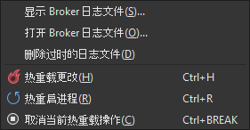
此外，Agent 还提供了一个 API，可在任意时间点安排热加载操作：
| 应用程序接口 | 说明 |
|---|---|
void Agent::ScheduleReload(void);
|
调度热重载操作，使WantsReload()尽快返回 true。 |
当你想监听自己的快捷方式，或从自定义调试菜单调用 Live++ 热加载或类似操作时，这很有用。
在内部，该操作会触发后台编译过程。如果编译成功，它就会将新代码加载到应用程序中，并与现有代码进行链接。当然，任何不属于原始可执行文件的函数也会被正确链接。
提示
编译器和链接器的输出总是会记录到 Broker UI 的日志选项卡以及集成开发环境的输出窗口，如 Visual Studio 或 Rider。这样，您就可以通过双击输出窗口中的行或点击F8 来查找错误位置。另外，在 Broker 用户界面的日志选项卡上双击相应的错误行也会突出显示该行，并使集成开发环境转到错误位置：
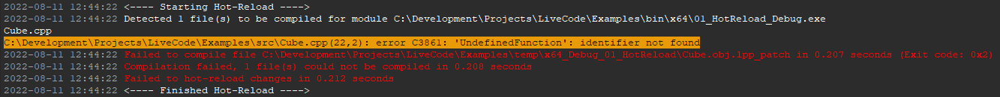
示例
Live++ 提供了一个名为"01_HotReload"的示例来演示此功能。
统一分割
Live++ 会自动检测并分割作为任何已注册模块一部分的 unity/jumbo/blob 文件。对于所有此类 unity 文件，Live++ 会将所有包含的 .cpp 文件分割为各自的 .obj 文件，并使用这些文件进行重构和重新编译，如下例所示：
// these are the contents of Unity.cpp:
#include "FileA.cpp"
#include "FileB.cpp"
#include "FileC.cpp"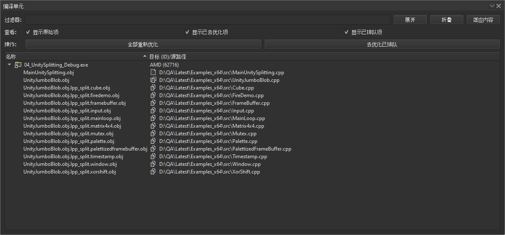
通过使用"启用对统一/jumbo/blob/混合文件的拆分"设置，可以在每个项目的基础上控制 Unity 分割。如果您想要更细粒度的控制，您可以在每个编译器的基础上启用统一拆分，方法是将 LPP_FORCE_UNITY_SPLITTING 设置为命令行选项中要拆分的所有编译器的预处理器定义。
注意事项
只有在首次接触 unity 文件所包含的 .cpp 文件时，才需要执行 Unity 分割。虽然这会导致重新编译 unity 文件包含的每个翻译单元，但在许多情况下，这一操作与重新编译整个 unity 文件一样快，尤其是在现代多核机器上。
示例
Live++ 提供了一个名为"04_UnitySplitting"的示例来演示此操作。
停止进程
通常情况下，一旦计划进行热加载操作，Live++ 会自动收集修改后的文件并在后台开始编译。但是，当启用 Live++ 的进程在调试器中被保持时（如在断点处），该进程不会有任何进展，因此 Live++ 无法与其通信。
Visual Studio 和 Rider 调试器
使用 Visual Studio 或 Rider 调试时，Live++ 会尝试自动执行必要操作，使进程进入可继续与 Live++ 通信的模式。如果成功，Broker UI 日志将显示"已自动将调试器附加到 PID 为 XXXXX 的进程"；然后，Live++ 将编译您的更改并安装代码补丁。之后，进程将再次在调试器中保持相同的指令。
其他调试器
如果自动化不成功，或者正在使用 WinDbg 等其他调试器，用户界面日志将显示"正在等待 PID 为 XXXXX 的目标进程。如果进程在调试器中当前处于搁置状态，请按“继续”（在 Visual Studio 和 Rider 中为 F5）"。重新启动应用程序，Live++ 将编译并安装您所做的任何更改。在编译完成之前，进程仍不会执行新指令。一旦补丁被 Live++ 安装，您的进程将自动继续执行。
这种情况下的完整事件序列概述如下：
- 调试器遇到断点并停止进程。
- 调试照常进行。
- 对当前正在调试/执行的代码进行一次或多次修改，并调用 Live++ 热加载。
- Live++ 会获取修改后的文件，并等待您在调试器中继续进程。
- 继续进程，例如按下 F5。
- 你的进程仍会停止，但这次是由 Live++ 来停止。
- Live++ 会编译您的更改、安装代码补丁，并让您的进程继续执行。
- 您的进程将继续执行之前的操作。
注意事项
在这种情况下，Live++ 不会调用你可能安装的任何钩子，因为那可能会导致死锁。
Natvis 可视化
Natvis 可视化是自定义类型的可视化规则，可由 Visual Studio 调试器理解。
通常，对于 Live++ 创建的补丁，调试器会自动获取.natvis文件。不过，如果情况并非如此，将这些文件放到用户特定或系统范围的 Natvis 目录中通常会有所帮助。
热重启
为了解决关闭和重启应用程序时出现的构建和链接时间问题，Live++ 提供了一种重启应用程序的机制，同时保持已加载数据和内部缓存的持久性。
一旦应用程序进入主循环，就必须重新启动，以便查看对启动函数等所做更改的效果，这些函数在进入主循环前被调用。在这种情况下，通常会发生以下一系列事件：
- 用户关闭应用程序。
- 构建系统链接可执行文件。
- 用户再次启动应用程序。
- 在 Live++ 中启用模块。这将从 PDB 中加载调试数据并构建内部缓存。
步骤 2 和步骤 4 可能会花费大量时间，尤其是在 AAA 项目中。通过使用 Live++ 提供的热重启功能，情况可以大大改善：
- Live++ 会通知所有感兴趣的进程准备重启。
- 这些进程运行可选代码，以防它们要执行某种清理。
- Live++会重启所有相关进程，并保持从PDB加载的所有数据以及内部缓存的活力。
- Live++ 启用了模块。这将重用现有调试数据和缓存，并安装先前编译的补丁。
请注意，使用热重启机制后，链接时间和 Live++ 加载时间几乎完全消除。
示例
Live++ 随附了一个名为"08_HotRestart"的示例来演示这一点。
请求热重启
请求热重启有四个选项：
-
按默认快捷键ctrl + alt + R 。无论 Live++ 应用程序当前是否有焦点，该快捷方式都会起作用。
-
从“工具”菜单中执行"热重启进程"：
这会向当前在 Broker 注册的所有进程发送热重启请求。
-
在 Broker 的 "进程"视图中选择一个或多个进程，右击打开右键菜单，然后选择"热重启所选进程"：
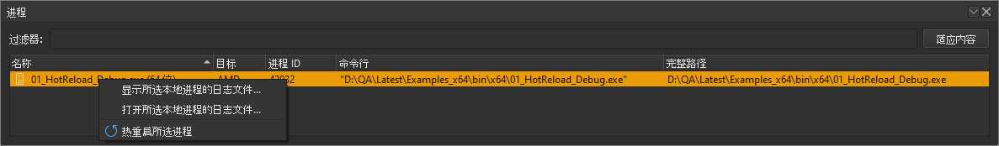
这样就可以热重启单个进程，这在客户端/服务器场景中非常有用。
-
此外，Agent 还提供了一个 API，用于在任意时间点安排热重启操作：
应用程序接口 说明 void Agent::ScheduleRestart(LppRestartOption option);调度热重启操作，使 WantsRestart()尽快返回 true。当你想监听自己的快捷方式，或从自定义调试菜单或类似菜单调用 Live++ 热启动时，这非常有用。
默认 Agent
使用默认 Agent 时，内部实现会自动响应热启动请求。
同步代理
使用同步代理时，必须使用以下 API 响应热启动请求：
| 应用程序接口 | 说明 |
|---|---|
bool Agent::WantsRestart(void);
|
返回 Live++ 是否要热启动进程。 |
void Agent::Restart(LppRestartBehaviour behaviour, unsigned int exitCode, const wchar_t* const commandLineArguments);
|
尊重给定行为，重启进程。不返回。 |
准备重启
请求热重启后，Live++ 会通知所有感兴趣的进程准备重启。您的应用程序负责定期（例如每帧）调用bool WantsRestart()，一旦有重启请求，它就会返回 true。在启动重启之前，您可以执行任何可选的清理工作（如刷新文件）。
启动重启
一旦您的应用程序完成了可选的清理任务，您就有责任调用void Restart(LppRestartBehaviour behaviour, unsigned int exitCode, const wchar_t* const commandLineArguments)。这就向 Live++ 发出了应该重启进程的信号，从而退出进程。const wchar_t* const commandLineArguments参数是可选参数，将传递给重启的进程。使用nullptr将以原始命令行环境重启进程。
在热重启操作完成后，任何连接到重启进程之一的 Visual Studio 或 Rider 调试器都将被 Live++ 自动重新连接到相应进程。
退出时的行为取决于LppRestartBehaviour参数，如下表所示：
| 重启行为 | 说明 |
|---|---|
| LPP_RESTART_BEHAVIOUR_DEFAULT_EXIT | 使用给定的退出代码调用ExitProcess()。 |
| LPP_RESTART_BEHAVIOUR_EXIT_WITH_FLUSH | 使用给定的退出代码调用exit()。 |
| LPP_RESTART_BEHAVIOUR_EXIT_WITHOUT_FLUSH | 使用给定的退出代码调用_Exit()。 |
| LPP_RESTART_BEHAVIOUR_INSTANT_TERMINATION | 使用给定的退出代码调用TerminateProcess()。 |
提示
请求重启后，应用程序最多有 10 秒钟的时间执行可选的清理任务，并调用void Restart(LppRestartBehaviour behaviour, unsigned int exitCode, const wchar_t* const commandLineArguments)。如果超过这个时间跨度，Live++ 将放弃重启该进程。
热修复
Live++ 通过定制的异常处理程序（Vectored Exception Handler，VEH）提供强大的开箱即用错误恢复功能，该程序在幕后使用结构化异常处理程序（Structured Exception Handling，SEH）。与 Live++ 的热加载功能配合使用，通常可从访问违规、除以零等致命错误中进行优雅恢复。使用 Live++ 的异常处理程序时，每次进程引发未处理异常（如由访问违规引起）时，都会调用该处理程序。
如果在进程中附加了 Visual Studio 或 Rider 等调试器，它将始终获得第一个处理异常的机会--这是操作系统所确保的。
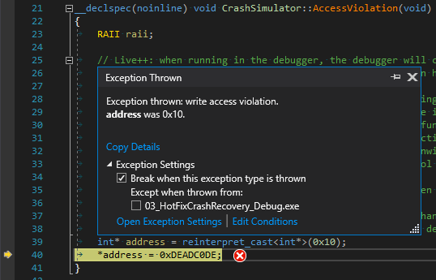
在调试器中继续进程将调用 Live++ 的异常处理程序，该程序会在 Broker 中打开一个对话框，让您决定如何处理该异常：
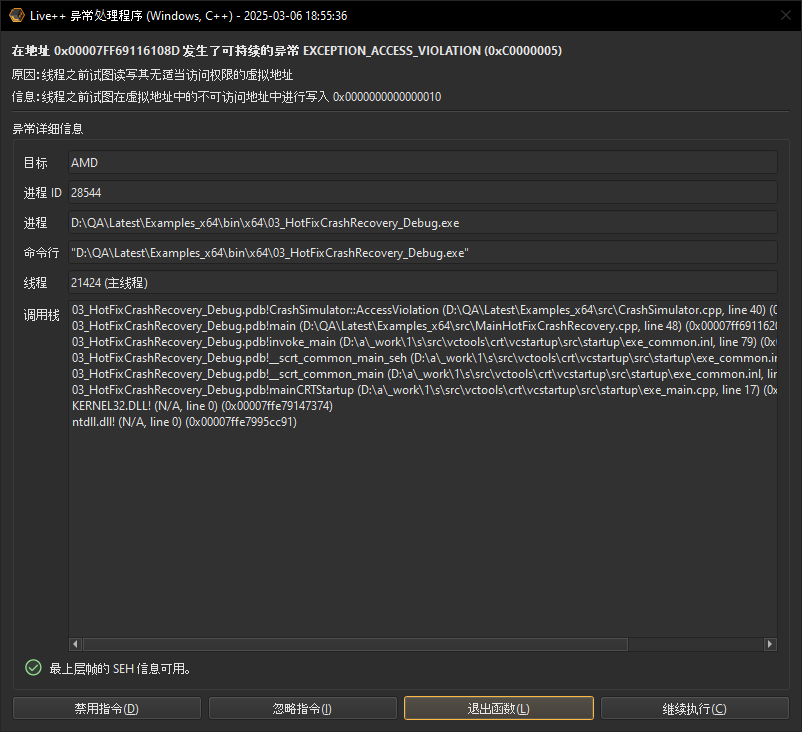
双击显示的调用堆栈中的一行，将在 Visual Studio 或 Rider 中打开该位置的相应源文件。
异常处理程序提供的选项如下：
-
"禁用指令"：
完全禁用发生故障的机器指令。如果异常来自可以重新编译的自己的模块/源文件，这是一个有用的选项，但绝不能用于第三方代码，例如 Visual Studio Runtime。 -
"忽略指令"：
忽略故障机器指令一次。下次调用相应函数时，该指令将导致同样的异常，除非在此期间重新编译了代码。 -
"退出函数"：
离开当前函数，继续执行父函数。此外，如果有完整的 SEH 信息，堆栈将被展开，局部变量将被调用析构函数。 -
"继续执行"：
一次忽略该异常并继续执行。这将把异常交给下一个已安装的异常处理程序（如果有的话）。在最后一个已安装的异常处理程序有机会处理异常后，进程要么在调试器中停止（如果已连接调试器），要么终止。
当异常处理程序对话框显示时，您可以像往常一样使用 Live++ 更改和重新编译代码。但请注意，虽然新代码将在后台安装，但进程执行必须从故障点继续进行，因此您仍必须决定如何处理相关异常。
注意事项
在这种情况下，Live++ 在重新编译代码时不会调用任何钩子，因为这可能会导致死锁。
提示
要在可执行文件中提供 SEH 信息，需要启用以下编译器设置：
C/C++ -> Code Generation -> Enable C++ Exceptions -> Yes with SEH Exceptions (/EHa)
只有在离开当前函数时，才需要 SEH 信息来释放堆栈。如果异常处理程序没有 SEH 异常信息，则仍可顺利运行，但不会执行堆栈解卷操作。
示例
Live++ 随附了一个名为"03_HotFixCrashRecovery"的示例来演示这一点。
热取消优化
即时去优化代码有助于在应用程序的可调试性和迭代时间之间取得平衡。未经优化的调试构建比经过优化的零售构建更容易调试，但在开发过程中使用时速度往往太慢。另一方面，经过优化的构建版性能要好得多，但调试起来却困难得多。
为了缓解这种情况，Live++ 提供了一些功能，可让您轻松地取消优化代码、调试代码并返回到完全优化的版本 - 所有这些都在正在运行的应用程序中完成。使用 Hot-Deoptimize 功能时无需预付费用，因为翻译单元将根据需要取消优化。这与其他方法不同，而且 Hot-Deoptimize 完全独立于 IDE，并且可在所有受支持的平台上使用。
在编译引擎盖下，除了优化标志将被禁用外，该功能将使用原始编译器选项重新编译文件。这意味着任何用于定义宏的预处理器定义或其他标志也将在去优化版本中设置。当然，这也意味着去优化后的代码与完全调试编译后的代码并不完全相同，因为断言等功能通常会使用只在调试编译时定义的宏。
Live++ 提供的选项如下：
- 在 Broker 的编译单元视图中选择一个或多个文件，右键单击打开上下文菜单，然后选择"切换选定编译单元的优化"，即可立即取消所选编译区的优化。
- 或者，也可以选择"将选定编译单元加入去优化队列"，将编译器排入优化队列，以便稍后进行优化。 可以通过选择"去优化已排队"操作来启动排队编译的去优化。
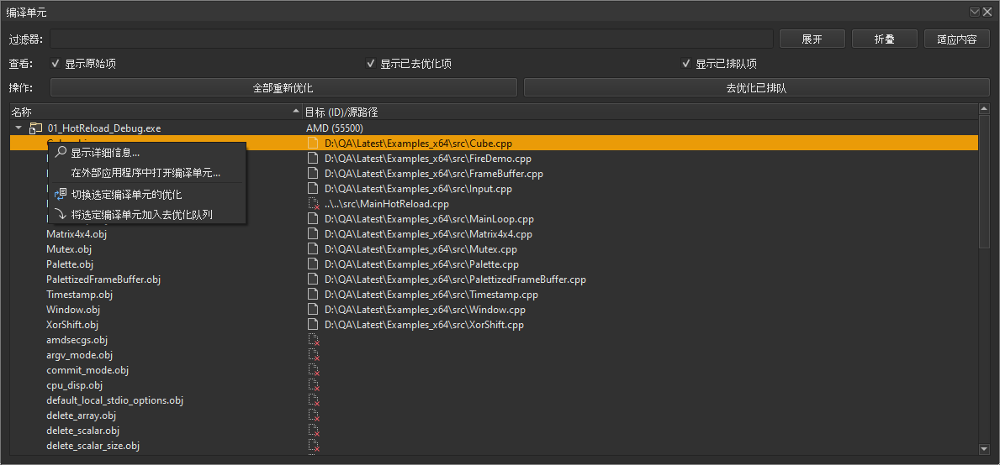
- 在 Visual Studio 或 Rider 中按下默认快捷键ctrl + alt + O ，即可切换当前打开文件的优化状态。
- 您也可以在文件顶部放置宏LPP_DISABLE_OPTIMIZATIONS，然后热加载更改，从而切换文件的优化状态。这种方法的缺点是，Live++ API"LivePP/API/x64/LPP_API_x64_CPP.h "需要在该文件中可见，而且无法在编译器视图中跟踪去优化状态。
- 可以通过在上下文菜单中选择"将选定编译单元加入去优化队列"重新取消排入队列的编译程序。
- 一旦要将所有编译项恢复到原始优化状态，请选择"全部重新优化"操作。
在编译单元视图中，当前处于取消优化状态的源文件将以 符号表示，而当前处于队列状态的源文件将分别以 符号表示：
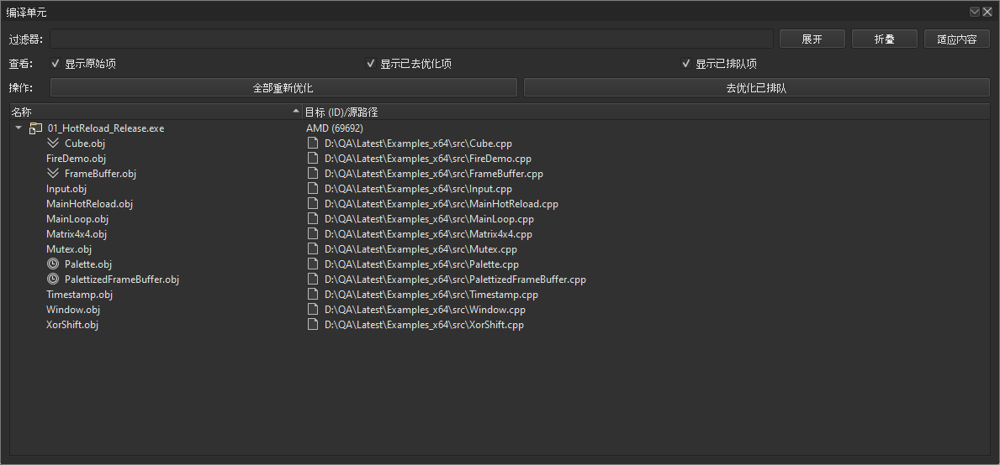
示例
Live++ 随附了一个名为"05_ToggleOptimizations"的示例来演示这一点。
多进程编辑
在某些客户端/服务器和编辑器/游戏设置中，能够将更改同时热加载到多个进程或同一应用程序的多个实例中是非常有用的。有了 Live++，这一功能开箱即用，无需任何特殊设置。
Broker 中的 "进程"视图显示当前在 Live++ 注册的所有进程：
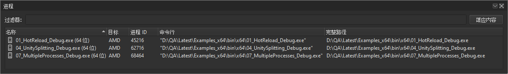
无论注册了多少进程，Live++ 支持的所有操作都将针对受影响或选定的进程执行。Live++ 会自动确保对属于多个模块或应用程序的任何源文件所做的更改都会编译并热加载到所有受影响的进程中。
此外，在加载过程中，Live++ 会自动将所有代码更改注入 Live++ 应用程序的任何后续实例，从而产生新的行为，即使可执行文件在此期间从未在磁盘上链接或更改过。代码的后续更改将被热加载到所有运行进程中，无论这些进程是在哪个时间点启动的。
示例
Live++ 随附了一个名为"07_MultipleProcesses"的示例来演示这一点。
联网编辑
与多进程编辑类似，Live++ 也不需要特殊的代码设置，就能在任何机器上运行的远程进程中工作。唯一的要求是，这些远程进程通过局域网连接到本地 Broker，具体配置如下：
-
在本地计算机上启动 Broker，并记下窗口标题中显示的主机名或 IP 地址，如 192.168.8.147：
-
在远程计算机上打开 Broker，进入编辑 -> 全局偏好设置... -> 网络，输入运行 Broker 的本地计算机的主机名或 IP 地址，然后按"保存"：
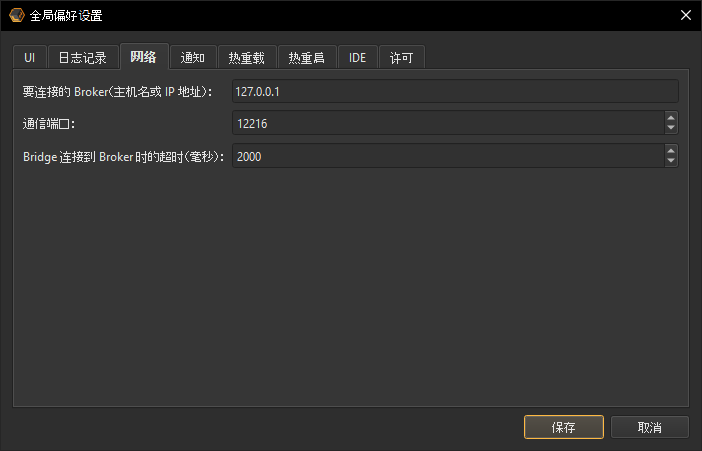
这将在远程计算机上保存全局首选项，每台远程计算机只需执行一次。
为了使网络编辑工作正常进行，必须先启动本地机器上的应用程序，然后再启动远程机器上的应用程序。不过，Live++ 可以在本地进程和远程进程任意混合的情况下运行，也可以在任意机器上运行同一应用程序的多个实例。
注意事项
由于 Live++ 所需的大部分信息只能在本地机器上获得，因此代码更改只能在本地机器上接收和编译。
已连接的机器和进程可分别在 "目标"和 "进程"视图中验证：
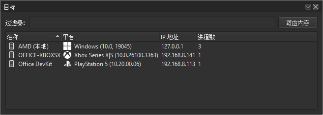
示例
Live++ 随附了一个名为"10_NetworkedEditing"的示例来演示这一点。
授权
激活
在使用 Live++ 之前，首先需要激活机器上的许可证。为此，请启动 Broker，从主菜单中选择许可 -> 激活...，然后选择要激活许可的平台和语言，如Windows、C++。这将打开一个对话框，您需要在其中输入激活代码和用户 ID：
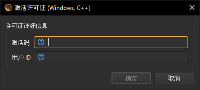
激活码在您购买 Live++ 时已发送给您，是一个 12 个字符的密钥，格式为 XXXX-XXXX-XXXX。
用户 ID 可以自由选择，在与给定激活码相关的许可证池中标识您的许可证。如果您需要离线停用许可证，例如，您的机器在重新安装时没有先停用现有许可证，则需要使用用户 ID。常见的用户 ID 有"Jane home office "或"John laptop"。
在对话框中按下"确定 "后，Live++ 将尝试使用您输入的数据联系激活服务器。如果给定的激活码有效，Live++ 将生成一个与您的机器绑定的许可证，只能由您使用。在所有其他情况下，将显示错误。
注意事项
如果由于公司防火墙或代理服务器的原因，您在连接激活服务器时遇到问题，请联系技术支持。
停用
如果您需要停用许可证，例如，因为您的机器需要重新安装，或者您想退役许可证以便您的同事可以使用它，请导航至 Broker 主菜单中的许可 -> 停用...，然后选择您希望停用许可证的平台和语言，例如Windows、C++。这将停用激活服务器上的许可证。
免费试用
如果您还没有许可证，但想试用 30 天免费试用版，请调用 Live++ 热加载，然后会弹出以下对话框：
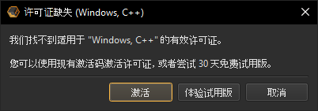
在此对话框中选择体验试用版将导致 Live++ 从激活服务器获取试用许可证。
命令行工具
还可以使用 Live++ 安装的CLI目录中的命令行工具自动激活和停用许可证。每种平台和语言组合都有一个工具；例如，"LPP_License_x64_CPP.exe "负责Windows 和 C++ 的许可证管理。
每个工具都能理解"--activate和"--deactivate"选项，分别用于激活和停用许可证。更多信息，请查阅集成的"-h "帮助选项。
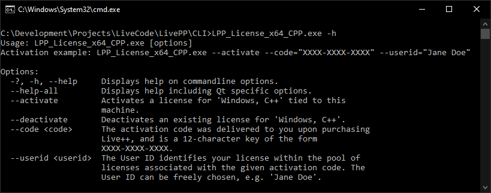
图形用户界面
Live++ 的 Broker GUI 由多个不同的可停靠和浮动窗口及视图组成，可提供已注册目标、进程、模块和编译器的概览。
目标
"目标"视图显示所有已连接的本地和远程机器、它们的平台、IP 地址和已注册进程的数量。
进程
"进程"视图显示所有已注册的进程、其目标、进程 ID、可执行文件的完整路径以及启动进程的命令行。
此外，"进程"视图还提供了一个右键菜单，其中包含以下选项：
-
"显示所选本地进程的日志文件..."：
在 Windows 资源管理器中显示与选定进程相关的日志文件。 -
"打开所选本地进程的日志文件..."：
使用相应的默认应用程序打开与选定进程相关的日志文件。 -
"热重启所选进程"：
向所选进程发送热重启请求。
模块
"模块"视图显示所有加载的模块、模块加载到的进程 ID、模块大小以及模块加载到的地址范围。
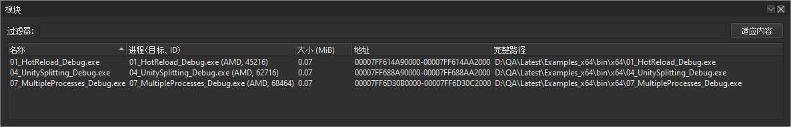
编译器
编译单元视图以层次树形显示所有模块及其编译器，以及每个编译器的源路径。
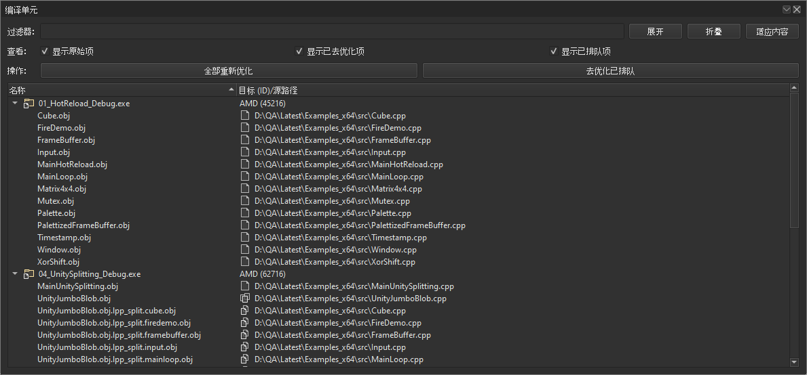
双击树形视图中的编译器，就能在 Visual Studio 或 Rider 的运行实例中打开相应的源文件。
此外，右键单击编译单元视图还提供了一个上下文菜单，其中包含以下选项：
-
"显示详细信息..."：
在单独的对话框中显示编译器的详细信息。 -
"在外部应用程序中打开编译单元..."：
使用相应的默认应用程序打开所选编译程序的源文件。 -
"切换选定编译单元的优化"：
切换所选编译的优化状态。 -
"将选定编译单元加入去优化队列":
将选定的编译器排入队列，以便稍后进行取消优化。
编译单元详细信息对话框提供每个编译域的详细信息，如 PDB 路径、编译器路径和用于重新编译的命令行。
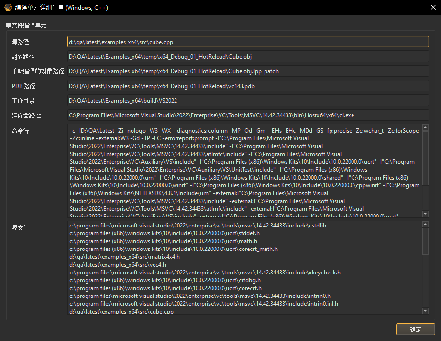
全局首选项
全局首选项可以通过在 Broker 主菜单中选择 编辑 -> 全局偏好设置...进行配置。它们提供了一些全局设置，可以自定义 Broker 的外观和行为，并始终保存在 Broker 目录中的global_preferences.json。
你可以通过提供一个可选的global_preferences_default.json文件来定义默认设置，也可以通过在同一目录下提供一个可选的global_preferences_override.json文件来覆盖设置。Live++ 将按以下顺序加载文件：
- global_preferences_default.json
- global_preferences.json
- global_preferences_override.json
如果你想为整个团队设置有意义的默认值和/或强制设置特定偏好值，同时仍允许个人根据自己的需要配置其余偏好，那么这种行为就非常有用。
用户界面
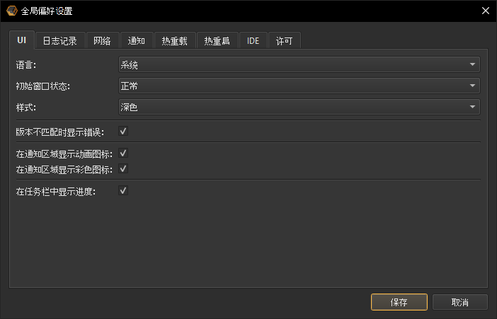
-
"语言："
让您选择语言。 -
"初始窗口状态："
让您选择 Broker 是以正常大小、最大化还是在系统托盘中启动。 -
"样式："
让您选择浅色和深色风格。 -
"版本不匹配时显示错误："
启用此项后，如果 Agent 与 Broker 之间的 API 版本不匹配，Broker 将在模态对话框中显示错误。 -
"在通知区域显示动画图标："
启用此项后，当操作正在进行时，通知区域的图标将显示为动画。 -
"在通知区域显示彩色图标："
启用此项后，通知区域的图标将根据上次操作是成功还是出错而着色。 -
"在任务栏中显示进度："
启用此项后，当操作正在进行时，任务栏将显示动画。
日志记录
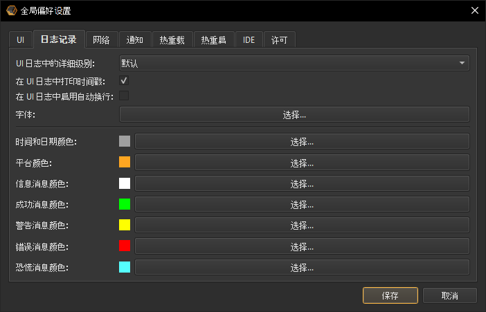
-
"UI 日志中的详细级别："
自定义是否需要默认或详细的日志输出。 -
"在 UI 日志中打印时间戳："
自定义是否希望用户界面日志输出时间戳。 -
"在 UI 日志中启用自动换行："
自定义是否希望用户界面日志使用换行。
网络
-
"要连接的 Broker（主机名或 IP 地址）："
在本地机器上运行的进程应始终使用127.0.0.1或localhost。在远程机器上运行的进程需要相应配置 Broker IP。 -
"通信端口："
Bridge 和 Broker 之间 TCP/IP 连接使用的端口。 -
"Bridge 连接到 Broker 时的超时（毫秒）："
Bridge 连接 Broker 时要考虑的超时。
通知
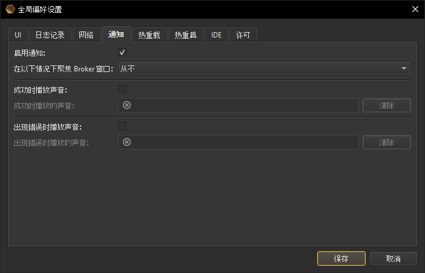
文件路径可以是绝对路径，也可以是相对于 Broker 的路径。
-
"启用通知："
启用后，Live++ 将显示已完成操作的祝酒辞通知。 -
"在以下情况下聚焦 Broker 窗口："
可让您选择何时聚焦 Broker 窗口：从不、热重载或热重启操作时、出错时、成功操作时或始终。 -
"成功时播放声音：", "成功时播放的声音："
可以指定在编译成功时播放的 .WAV 文件。 -
"出现错误时播放声音："，"出现错误时播放的声音："
可指定在编译失败时播放的 .WAV 文件。
热重载
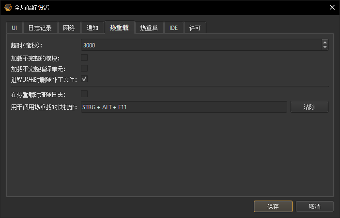
-
"超时（毫秒）："
调度热重载操作时使用的超时（毫秒）。响应时间超过超时时间的 Agent 将放弃热重载操作。 -
"加载不完整的模块："
启用此项后，不完整的模块将被加载并显示在编译单元视图中，以便您检查任何缺陷，如缺少链接器选项。 -
"加载不完整编译单元："
启用此选项后，将加载不完整的编译器并显示在编译单元视图中，以便您检查任何缺陷，如缺少编译器选项。 -
"进程退出时删除补丁文件："
启用此选项后，一旦相应进程退出，属于 Live++ 补丁的文件将被删除。 -
"在热重载时清除日志："
启用此选项后，热加载时将清除用户界面日志。 -
"用于调用热重载的快捷键："
可让您配置调用热重载的快捷方式。
热重启
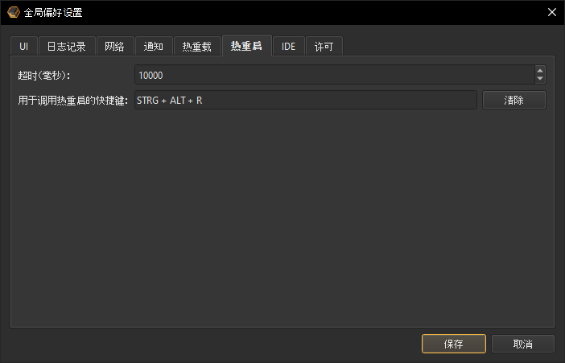
-
"超时（毫秒）："
调度热重启操作时使用的超时（毫秒）。响应时间超过超时时间的 Agent 将放弃热重启操作。 -
"用于调用热重启的快捷键："
用于配置调用热启动的快捷方式。
IDE
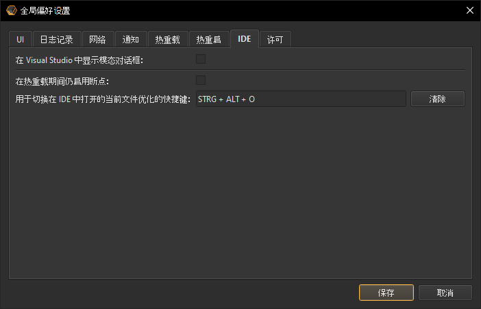
-
"在 Visual Studio 中显示模态对话框："
启用此项后，在热重启操作期间，Visual Studio 中将显示一个模式对话框。这将禁止在任何 Live++ 操作正在进行时与 Visual Studio 调试器进行交互。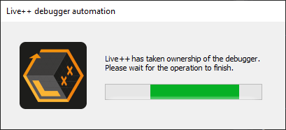
-
"在热重载期间仍启用断点："
启用此项后，在热加载操作期间将保持启用断点。通常，在热加载操作期间，Visual Studio 和 Rider 中的断点会被暂时禁用，以避免意外停止进程。 -
"用于切换在 IDE 中打开的当前文件优化的快捷键："
可让您配置切换 Visual Studio 或 Rider 中打开的当前文件优化的快捷方式。
许可
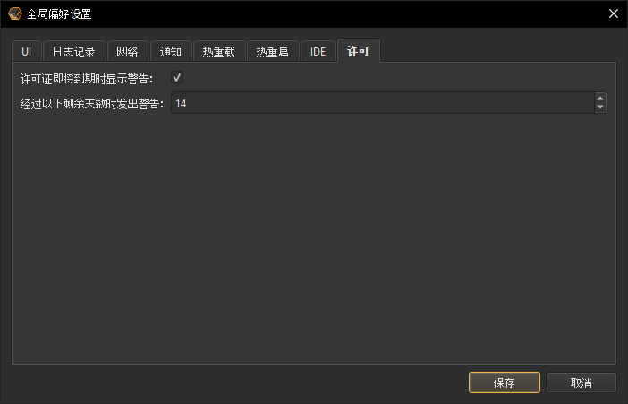
-
"许可证即将到期时显示警告："
启用此项后，Broker 将在当前许可证即将过期时显示警告。 -
"经过以下剩余天数时发出警告："
可让您配置许可证即将过期时会收到多少天的警告。
项目首选项
在 Broker 主菜单中选择 编辑 -> 项目偏好设置... 首选项可以配置项目首选项。它们提供特定于项目的设置，可让您自定义 Live++ 的行为，并存储在您选择的 .json 文件中。
常规设置
如果要使用项目偏好设置，有两个选项：
-
在创建 Agent时，将项目特定的 .json 文件作为参数传递，如以下示例所示：
// create a synchronized Live++ agent, loading the required project preferences. // the path to load the preferences from can be absolute, or relative to this application. lpp::LppSynchronizedAgent lppAgent = lpp::LppCreateSynchronizedAgentWithPreferencesFromFile(nullptr, L"ThirdParty/LivePP", L"Preferences/continuous_compilation.json"); -
首先创建一个默认的
lpp::LppProjectPreferences实例，填写所需的首选项，然后在创建 Agent时将其作为参数传递，如下例所示：// disable unity splitting in the preferences lpp::LppProjectPreferences prefs = lpp::LppCreateDefaultProjectPreferences(); prefs.unitySplitting.isEnabled = false; // create a default Live++ agent with the project preferences lpp::LppDefaultAgent lppAgent = lpp::LppCreateDefaultAgentWithPreferences(nullptr, L"ThirdParty/LivePP", &prefs);
如果在创建 Agent 时既未传入 .json 文件的路径，也未传入首选项实例，Live++ 将假定所有项目首选项均为默认值。
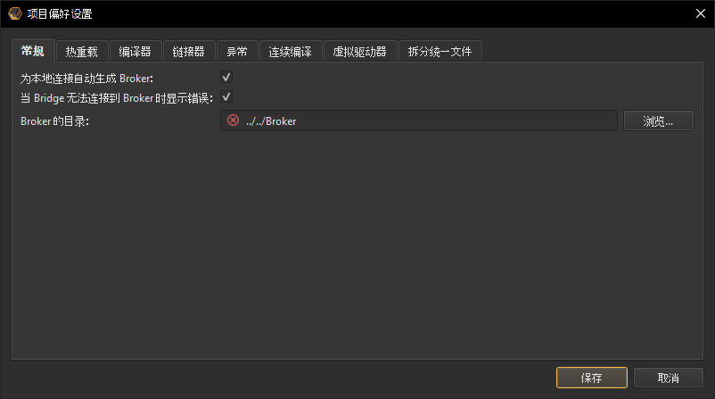
-
"为本地连接自动生成 Broker："
启用此项后，Agent 加载到目标应用程序后，将立即为本地连接自动生成 Broker。 -
"当 Bridge 无法连接到 Broker 时显示错误："
启用此项后，Bridge 将在无法连接到 Broker 时报告错误。 -
"Broker 的目录："
指定 Agent 从哪个目录生成 Broker。该目录可以是绝对目录，也可以是 Agent 的相对目录。
热重载
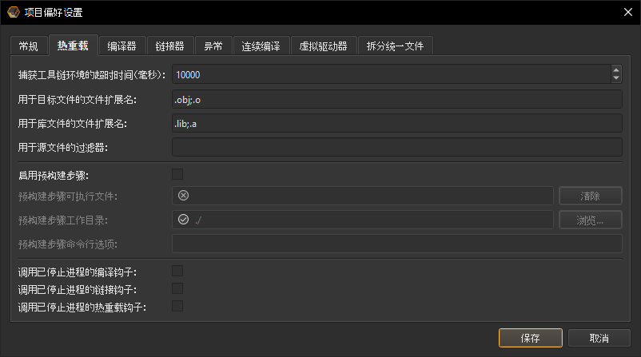
-
"捕获工具链环境的超时时间（毫秒）："
捕获 Visual Studio 编译器和链接器环境时使用的超时（毫秒）。执行时间超过超时时间的批处理文件将自动终止。 -
"用于目标文件的文件扩展名："
对象文件考虑的文件扩展名列表。其他文件扩展名将被忽略。 -
"用于库文件的文件扩展名："
库文件考虑的文件扩展名列表。其他文件扩展名将被忽略。 -
"用于源文件的过滤器："
用于过滤源文件的分号分隔字符串列表。包含其中一个过滤器的源文件将被完全忽略。过滤器检查使用小写源路径。 -
"启用预构建步骤："
让您决定 Live++ 是否应在每次热加载操作中执行预编译步骤。 -
"预构建步骤可执行文件："
可让您选择执行预编译步骤时调用的可执行文件。 -
"预构建步骤工作目录："
用于选择执行预编译步骤时使用的工作目录。 -
"预构建步骤命令行选项："
用于指定在执行预编译步骤时传递给调用的可执行文件的命令行选项。 -
"调用已停止进程的编译钩子："
让您决定 Live++ 是否要为停止的进程调用编译钩子。 -
"调用已停止进程的链接钩子："
让您决定 Live++ 是否应为停止的进程调用链接钩子。 -
"调用已停止进程的热重载钩子："
让您决定 Live++ 是否应为停止进程调用热加载钩子。
注意
允许 Live++++ 调用已停止进程的钩子是一个潜在的危险操作，因为它可能导致死锁。对于停止的进程，Live++ 总是从其接收线程调用钩子，而进程中的所有其他线程都处于暂停状态。如果任何钩子试图锁定同步基元（如互斥体），而暂停的线程却持有相同的基元，就会出现死锁。
因此，您的钩子实现必须假设任何线程都可能随时被挂起。
示例
Live++ 随附了一个名为"14_PreBuildStep"的示例，演示了如何设置预编译步骤。
编译器
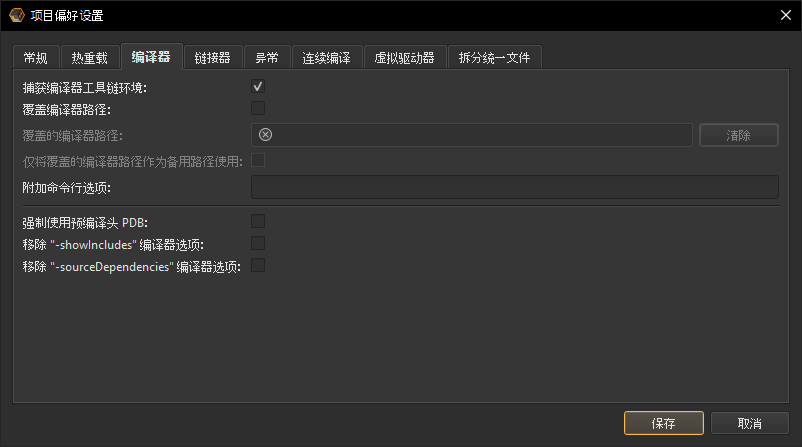
文件路径可以是绝对路径，也可以是相对于 Broker 的路径。
-
"捕获编译器工具链环境："
让您决定 Live++ 是否应搜索并使用 vcvars*.bat 编译器工具链环境。禁用此设置对自定义构建系统很有用。 -
"覆盖编译器路径："
让你覆盖在 PDB 中找到的编译器路径，这样 Live++ 在重新编译文件时就会改用此编译器。只有在使用自定义编译系统的极少数情况下才会需要。 -
"仅将覆盖的编译器路径作为备用路径使用："
启用此项后，只有在 PDB 中检测到的编译器不可用时，才会使用覆盖的编译器路径。 -
"附加命令行选项："
可让您在创建补丁时向编译器传递附加选项。 -
"强制使用预编译头 PDB："
启用此项时，会强制 Live++ 在重新编译时让每个翻译单元使用与相应预编译头相同的 PDB。这主要是作为编译器错误 C2858 的一种变通方法，在使用带有远程 Agent 和预编译头文件的 Incredibuild 时会遇到这种错误。 -
"移除 "-showIncludes" 编译器选项："
启用此选项后，某些编译系统使用的-showIncludes编译器选项将在重新编译代码时被删除。 -
"移除 "-sourceDependencies" 编译器选项："
启用此项后，某些编译系统在重新编译代码时使用的-sourceDependencies编译器选项将被移除。
链接器
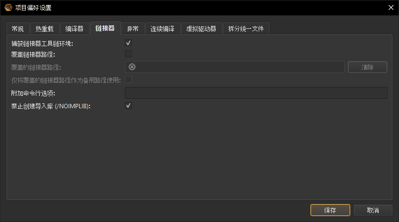
文件路径既可以是绝对路径，也可以是相对于 Broker 的路径。
-
"捕获链接器工具链环境："
让您决定 Live++ 是否应搜索并使用 vcvars*.bat 链接器工具链环境。禁用此设置对自定义构建系统很有用。 -
"覆盖链接器路径："，"覆盖的链接器路径："
让您覆盖在 PDB 中找到的链接器路径，因此 Live++ 在重新编译文件时将使用此链接器代替。只有在使用自定义编译系统的极少数情况下才会需要。 -
"仅将覆盖的链接器路径作为备用路径使用："
启用此项后，只有在 PDB 中检测到的链接器不可用时，才会使用覆盖的链接器路径。 -
"附加命令行选项："
允许您在创建补丁时向链接器传递附加选项。 -
"禁止创建导入库 (/NOIMPLIB)："
在创建补丁 DLL 时，有些链接器坚持创建导入库，即使 DLL 没有导出任何符号。虽然 Live++ 并不要求这些导入库，但一些旧的链接器并不理解/NOIMPLIB选项。
异常
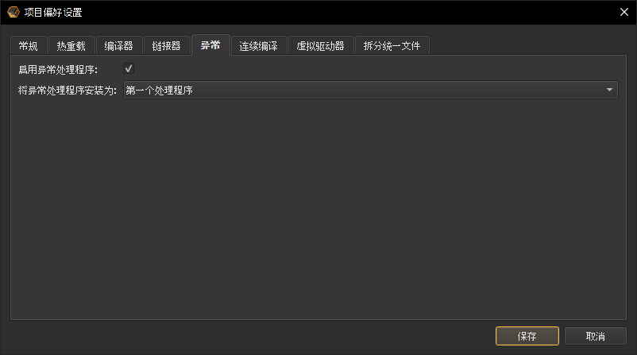
-
"启用异常处理程序："
启用此选项后，Live++ 将为Hot-Fix功能安装异常处理程序。 -
"将异常处理程序安装为："
让你选择异常处理程序是作为第一个还是最后一个处理程序安装。
连续编译
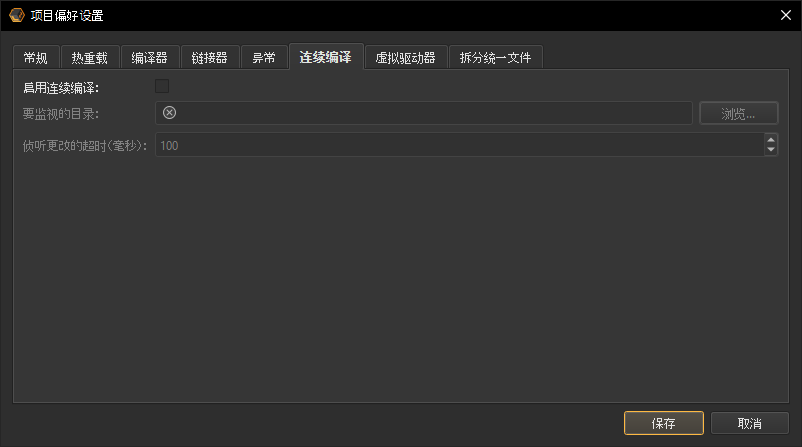
目录可以是绝对目录，也可以是 Broker 的相对目录。
-
"启用连续编译："
启用连续编译时，Live++ 会等待给定目录（及其子目录）中的更改通知，并在超时后自动编译任何更改。 -
"要监视的目录："
使用连续编译时，您可以设置要监视更改的目录。 -
"侦听更改的超时（毫秒）："
监听更改通知时，Live++ 会等待后续更改，直到超时为止。
注意
当检测到要监视的目录中的任何文件发生变化时，Live++ 会触发编译进程，而这些文件不一定是编译的一部分。请务必选择相应的观察目录。
示例
Live++ 随附了一个名为"02_ContinuousCompilation"的示例来演示这一点。
虚拟驱动器
有些构建系统会在构建代码时临时设置一个虚拟驱动器，以便在构建过程中使用的所有工具都能引用同一路径。但是，编译后模块的 PDB 文件将包含该虚拟驱动器上的路径，而这些路径在启动应用程序和使用 Live++ 时可能不再可用。通过以下选项可以设置虚拟驱动器：
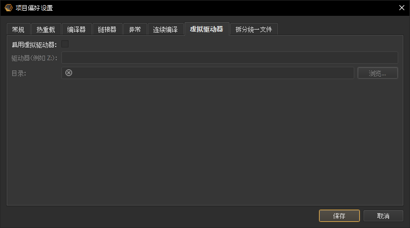
-
"驱动器（例如 Z:）："
用于指定映射到给定目录的虚拟驱动器的字母。字母后必须有冒号，如 "Z:"（不带引号）。 -
"目录："
用于设置映射到上述驱动器字母的目录，例如C:\MyPath。
统一分割
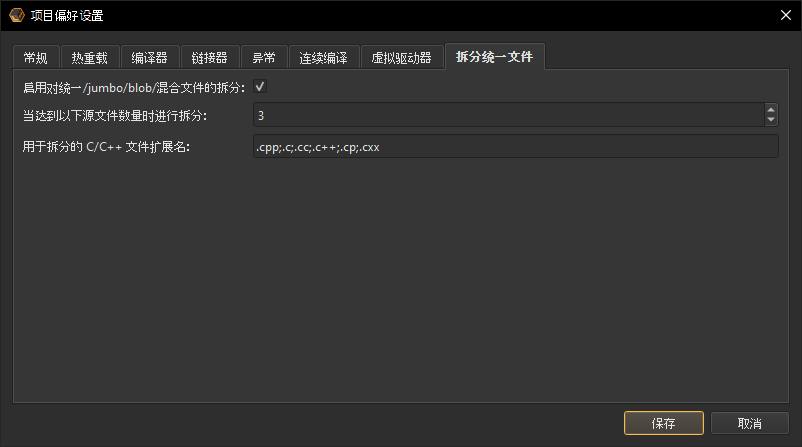
-
"启用对统一/jumbo/blob/混合文件的拆分："
启用此选项后，Live++ 将执行 unity 文件的分割。 -
"当达到以下源文件数量时进行拆分："
指定在 Live++ 尝试分割 unity 文件之前，unity 文件中必须包含的 .cpp 文件的最小数量，例如，如果此阈值设置为 3，则只有包含 3 个或更多 .cpp 文件的 unity 文件才会被分割。 -
"用于拆分的 C/C++ 文件扩展名："
在分割 unity 文件时被视为 C/C++ 文件的文件扩展名列表。
应用程序接口
Live++ 很擅长搞清楚事情，但它不会变魔术。应用程序接口（API）可让你为它提供帮助，使其在某些情况下工作，并以多个头文件的形式发布，可在 C 和 C++ 中使用。不过，对于任何平台和语言，客户端代码只需包含一个特定的头文件即可。
命名约定
一般来说，所有 API 符号都有一个共同的前缀。所有宏以LPP_ 开头，函数以Lpp 开头。在 C++ 中，所有函数都是lpp命名空间的一部分，以进一步减少名称冲突的机会。
调味品
所有需要使用目录或路径的 API 都有两种版本：ANSI 版本使用const char*作为参数，而宽字符版本使用const wchar_t*作为参数。
版本控制
Live++ 使用一个简单的版本控制方案，以确保头文件和 DLL 永远不会不同步。为此，头文件定义了它希望 DLL 输出的 API 版本，例如
#define LPP_VERSION "2.0.0"在内部，动态链接库提供了一个函数，用于返回其构建时所依据的应用程序接口版本，例如：......：
LPP_API const char* LppGetVersion(void);此外，DLL 内部还提供了一个函数，用于执行版本检查，并返回 API 和 DLL 版本是否匹配：
LPP_API bool LppCheckVersion(const char* const expectedVersion);创建 Agent 时，系统会自动为你执行这些检查，以确保 API 和 DLL 版本始终匹配。
Agent 验证
如果要检查创建 Agent 是否成功，可以使用以下 API：
| API | 说明 |
|---|---|
bool lpp::LppIsValidDefaultAgent(const LppDefaultAgent* const agent); |
返回给定的默认 Agent 是否有效。 |
bool lpp::LppIsValidSynchronizedAgent(const LppSynchronizedAgent* const agent); |
返回给定的同步 Agent 是否有效。 |
连接回调
为了与您的代码库或引擎进行更深入的集成，您可能需要使用以下可选 API 来检查 Agent、Bridge 和 Broker 的连接是否成功：
| 应用程序接口 | 描述 |
|---|---|
typedef void LppOnConnectionCallback(void* context, lpp::LppConnectionStatus status); |
回调函数类型。 |
void Agent::OnConnection(void* context, lpp::LppOnConnectionCallback* callback); |
在尝试将 Agent 连接到 Bridge/Broker 后，使用用户提供的上下文和连接状态调用给定的回调函数。 |
请注意，此 API 是非阻塞和线程安全的。无论该 API 是在内部尝试连接之前还是之后调用，Live++ 都会以最终连接状态调用一次回调。
钩子
钩子允许您在编译过程中显示进度条、消息框等，从而将 Live++ 更深入地集成到您的引擎/框架/应用程序中。钩子还可用于输出编译和链接信息及错误，并支持结构更改。
编译钩子
编译钩子允许你钩住热加载编译过程，并获得编译过程不同阶段的通知。支持以下编译钩子：
| 应用程序接口 | 说明 |
|---|---|
void PrecompileHook(lpp::LppPrecompileHookId, const wchar_t* const recompiledModulePath, unsigned int filesToCompileCount); |
注册一个在编译开始前调用的钩子。 使用 LPP_PRECOMPILE_HOOK(functionName)宏注册。 |
void PostcompileHook(lpp::LppPostcompileHookId, const wchar_t* const recompiledModulePath, unsigned int filesToCompileCount); |
注册在编译结束后调用的钩子。 使用 LPP_POSTCOMPILE_HOOK(functionName)宏注册。 |
void CompileStartHook(lpp::LppCompileStartHookId, const wchar_t* const recompiledModulePath, const wchar_t* const recompiledSourcePath); |
注册一个在文件编译开始时调用的钩子。 使用 LPP_COMPILE_START_HOOK(functionName)宏注册。 |
void CompileSuccessHook(lpp::LppCompileSuccessHookId, const wchar_t* const recompiledModulePath, const wchar_t* const recompiledSourcePath); |
注册在文件编译成功时调用的钩子。 使用 LPP_COMPILE_SUCCESS_HOOK(functionName)宏注册。 |
void CompileErrorHook(lpp::LppCompileErrorHookId, const wchar_t* const recompiledModulePath, const wchar_t* const recompiledSourcePath, const wchar_t* const compilerOutput); |
注册当文件编译失败时调用的钩子。 使用 LPP_COMPILE_ERROR_HOOK(functionName)宏注册。 |
由于大多数钩子的函数签名相似，因此不同的lpp::Lpp*HookId值作为第一个参数只是为了提供额外的类型安全和保护。
const wchar_t* const recompiledModulePath和const wchar_t* const recompiledSourcePath参数分别提供了重新编译模块和源文件的绝对路径。
链接钩子
链接钩子允许你挂钩到热加载链接过程，并获得链接过程不同阶段的通知。支持以下链接钩子：
| 应用程序接口 | 说明 |
|---|---|
void LinkStartHook(lpp::LppLinkStartHookId, const wchar_t* const recompiledModulePath); |
注册链接开始时调用的钩子。 使用 LPP_LINK_START_HOOK(functionName)宏注册。 |
void LinkSuccessHook(lpp::LppLinkSuccessHookId, const wchar_t* const recompiledModulePath); |
注册链接成功时调用的钩子。 使用 LPP_LINK_SUCCESS_HOOK(functionName)宏注册。 |
void LinkErrorHook(lpp::LppLinkErrorHookId, const wchar_t* const recompiledModulePath, const wchar_t* const linkerOutput); |
注册链接失败时调用的钩子。 使用 LPP_LINK_ERROR_HOOK(functionName)宏注册。 |
由于大多数钩子的函数签名相似，因此不同的lpp::Lpp*HookId值作为第一个参数只是为了提供额外的类型安全和保护。
const wchar_t* const recompiledModulePath参数提供了重新编译模块的绝对路径。
示例
Live++ 随附了一个名为"06_Hooks"的示例来演示钩子。
热重载钩子
热重载钩子允许你钩住热重载过程，并获得补丁操作不同阶段的通知。支持以下热重载钩子：
| 应用程序接口 | 说明 |
|---|---|
void PrePatchHook(lpp::LppHotReloadPrepatchHookId, const wchar_t* const recompiledModulePath, const wchar_t* const* const modifiedFiles, unsigned int modifiedFilesCount, const wchar_t* const* const modifiedClassLayouts, unsigned int modifiedClassLayoutsCount); |
注册一个钩子，在补丁加载到目标应用程序之前调用。 使用 LPP_HOTRELOAD_PREPATCH_HOOK(functionName)宏注册。 |
void PostPatchHook(lpp::LppHotReloadPostpatchHookId, const wchar_t* const recompiledModulePath, const wchar_t* const* const modifiedFiles, unsigned int modifiedFilesCount, const wchar_t* const* const modifiedClassLayouts, unsigned int modifiedClassLayoutsCount); |
注册在补丁加载到目标应用程序后调用的钩子。 使用 LPP_HOTRELOAD_POSTPATCH_HOOK(functionName)宏注册。 |
由于两个钩子期望使用相同的函数签名，因此作为第一个参数的不同lpp::Lpp*HookId值仅用于提供额外的类型安全和保护。
const wchar_t* const recompiledModulePath参数提供了重新编译模块的绝对路径。
const wchar_t* const* const modifiedFiles, unsigned int modifiedFilesCount参数提供了已修改文件的绝对路径数组。
注意
const wchar_t* const* const modifiedClassLayouts, unsigned int modifiedClassLayoutsCount参数最终将提供一个已修改类布局名称的数组，但该功能尚未可用。
示例
通过使用const wchar_t* const* const modifiedFiles, unsigned int modifiedFilesCount参数，Live++ 随附的所有示例都包含补丁前和补丁后钩子，支持在某些文件被修改时拆卸和重建类实例。
全局热重载钩子
全局热重载钩子允许你挂钩到热重载过程，并获得有关热重载操作开始和结束的通知。支持以下全局热重载钩子：
| 应用程序接口 | 说明 |
|---|---|
void GlobalHotReloadStart(lpp::LppGlobalHotReloadStartHookId); |
注册一个全局钩子，在热重载操作开始后调用。 使用 LPP_GLOBAL_HOTRELOAD_START_HOOK(functionName)宏注册。 |
void GlobalHotReloadEnd(lpp::LppGlobalHotReloadEndHookId); |
注册在热重载操作结束前调用的全局钩子。 使用 LPP_GLOBAL_HOTRELOAD_END_HOOK(functionName)宏注册。 |
由于这两个钩子期望使用相同的函数签名，因此作为第一个参数的不同lpp::Lpp*HookId值仅用于提供额外的类型安全和保护。
注意
与其他钩子不同，这些钩子被视为全局钩子。这意味着，无论钩子实际包含哪个模块，只要检测到任何已注册模块发生变化，钩子都会被调用。结构更改
以下操作被视为 "结构更改"：
- 更改类声明的内存布局，包括
- 添加或删除基类
- 添加或删除非静态数据成员
- 更改非静态数据成员的顺序
- 更改虚拟函数表的布局或内容，包括
- 添加或删除多态基类
- 添加或删除虚函数
- 更改虚函数的顺序
- 更改虚函数的签名
在对现有代码和数据进行结构性修改时，Live++ 必须确保新代码能正确使用分配和存储在旧内存布局中的现有数据。为此，现有对象的数据必须从旧的内存布局迁移到新的内存布局，这可以通过使用补丁前和补丁后热加载钩子来实现。
钩子语句可以放在全局作用域的任何地方，并会被自动调用。您可以在任何您认为合适的翻译单元中添加任意数量的钩子：对钩子的数量或可以添加钩子的文件数量没有限制。
下面是一个如何在补丁间进行数据迁移的简化示例：
void MyOwnPrePatchHook(lpp::LppHotReloadPrepatchHookId, const wchar_t* const, const wchar_t* const* const, unsigned int, const wchar_t* const* const, unsigned int)
{
serialization::SerializeAndDeleteObjects(g_allObjects, g_buffer);
}
void MyOwnPostPatchHook(lpp::LppHotReloadPostpatchHookId, const wchar_t* const, const wchar_t* const* const, unsigned int, const wchar_t* const* const, unsigned int)
{
serialization::CreateAndSerializeObjects(g_allObjects, g_buffer);
}
LPP_HOTRELOAD_PREPATCH_HOOK(MyOwnPrePatchHook);
LPP_HOTRELOAD_POSTPATCH_HOOK(MyOwnPostPatchHook);基本思想始终如一：
- 将现有对象的数据成员序列化到内存中。
- 删除对象。
- 使用新的类布局重新创建对象。
- 将内存中的数据成员序列化到新对象中。
这个过程的难易程度取决于你使用的设置和引擎。您还可以考虑其他替代方法，例如在补丁后钩子中重新启动或重新加载当前关卡。您可以随意使用您认为合适的钩子，以应对类似的特殊情况。
重要提示
强烈建议使用同步 Agent，以确保某些对象在使用过程中不会改变内存布局。请记住，在堆栈中创建的对象无法迁移到新的类布局中。
示例
Live++ 随附的所有示例都包含热加载钩子，可在某些文件被修改时支持数据迁移。
应用首选项
如果您愿意，可以使用以下 API 以编程方式应用 Live++ 全局首选项：
| 应用程序接口 | 说明 |
|---|---|
void Agent::SetBoolPreferences(LppBoolPreferences preferences, bool value); |
设置LppBoolPreferences枚举中的任何 bool 偏好。 |
void Agent::SetIntPreferences(LppIntPreferences preferences, int value); |
设置LppIntPreferences枚举中的任何整数偏好设置。 |
void Agent::SetStringPreferences(LppStringPreferences preferences, const char* const value); |
设置LppStringPreferences枚举中的任意字符串首选项。 |
void Agent::SetShortcutPreferences(LppShortcutPreferences preferences, int virtualKeyCode, int modifiers); |
设置LppShortcutPreferences枚举中的任何快捷方式首选项。 |
LppBoolPreferences、LppIntPreferences、LppStringPreferences和LppShortcutPreferences枚举中的每个枚举值都与全局首选项中的一个选项完全对应。这些枚举包含在LPP_API_Preferences.h 中，枚举值的名称不言自明。
向用户界面记录日志
Live++ 允许您使用以下 API 将消息记录到 Broker UI：
| 应用程序接口 | 说明 |
|---|---|
void Agent::LogMessageANSI(const char* const message); |
向 Broker UI 发送日志。 |
void Agent::LogMessage(const wchar_t* const message); |
向 Broker UI 发送日志。 |
限制
当前版本的 Live++ 有一些小限制，您应该了解。但请记住，除非另有说明，这些限制并非 Live++ 基础设施的基本限制，而是计划中但尚未可用的功能。Live++ 最终会在未来的更新中取消这些限制。
开销
只要没有构建和安装 Live++ 代码补丁，Live++ 造成的唯一运行时开销是由于/FUNCTIONPADMIN 链接器选项在每个函数前插入几个未使用的字节。不过，这对性能的影响微乎其微。
对于使用增量链接构建的模块，Live++ 会自动使用增量链接区块，直接修补函数地址。在这种情况下，使用 Live++ 补丁的函数完全不会造成任何额外开销。
在所有其他情况下，使用热补丁技术对函数进行补丁，其中包括一次短的 2 字节跳转以及一次到新函数的相对跳转。
Visual Studio 中的断点
在通过 Live++ 热加载的源文件中设置新的断点时，Visual Studio 调试器会尝试将此断点应用于包含相应源文件的所有补丁。这很快就会造成混乱，尤其是在向现有源文件添加新代码行之后：
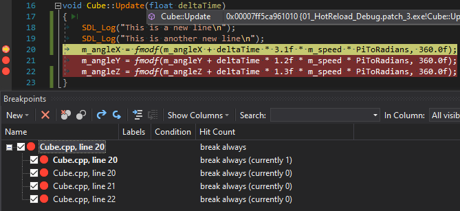
如上图所示，在Cube.cpp 的第 20 行设置新的断点后，调试器还会在第 21 行和第 22 行设置额外的断点。尽管由于旧代码从未被实际触发，这些断点会按预期工作，但指示器边缘的红点可能会产生误导。
为了缓解这个问题，建议在 Visual Studio 中启用Tools -> Options... -> Debugging -> General下的Require source files to exactly match the original version。
调试器中的全局变量
在任何热加载过的源文件中闯入调试器时，调试器通常无法显示全局变量和静态变量的值。造成这种情况的原因是，这些变量存在于原始可执行文件中，而补丁代码是从动态库中注入的。
为了解决这个问题，Visual Studio 和 Rider 都支持Context Operator（上下文操作符），可以将模块上下文传达给调试器。
举个例子，在名为MyApplication.exe的应用程序中，名为globalNamespace的命名空间中包含一个名为g_globalInteger的全局变量，可以将其添加到监视窗口中，显示为{,,MyApplication.exe}globalNamespace::g_globalInteger。
堆栈上的函数
由于 Live++ 中代码修补的工作方式，当前堆栈中的函数需要重新输入后才能观察到其代码变化。在实践中，这几乎从来都不是问题，它允许 Live++ 正确处理内联函数、在函数中引入新的堆栈变量等。
注释
这是 Live++ 使用的修补机制的固有限制，无法更改。
线程本地存储
使用线程本地存储变量没有问题，但目前不支持在线程本地存储中引入新的全局或静态变量。
Clang 中的动态初始化器
使用 Clang 编译时，不支持引入需要动态初始化器的新全局变量或静态变量。使用 Live++ 重新编译的补丁将不会调用动态初始化器。
已知问题
使用 Clang 的 FASTBuild
在使用带有 Clang++ 的 FASTBuild 时，FASTBuild 会在源文件预处理期间移除所有code class="notranslate language-cpp code-in-text">-I命令行参数，这很可能导致在重新编译期间丢失包含。
这似乎是由于使用 Clang 时FASTBuild 中的过时检查造成的。作为一种解决方法，请不要在 .bff 脚本中指定.CompilerFamily = 'clang'，或者从源代码编译FASTBuild 而不进行过时检查。
/external:I "需要"/external:W
在 Visual Studio 的某些版本中，工具链不能正确地将外部包含环境存储在 PDB 文件中，这一点已得到微软的承认。
在这种情况下，编译器会忽略/external:I，因此很可能导致重新编译时丢失包含。作为一种解决方法，在项目首选项中指定/external:W0作为附加编译器选项。
PDB 中缺少 INCLUDE
与上述错误类似，Visual Studio 的某些版本也没有在 PDB 文件中捕获和存储 INCLUDE 环境，微软也承认了这一点。
这同样会导致重新编译时丢失包含。作为一种解决方法，在项目首选项中指定所需的包含路径作为额外的编译器选项。
停止进程中的热重载
Visual Studio 2022（17.11 版）中引入的调试器现在会在内部缓存 CONTEXT 结构，从而导致GetThreadContext() Win32 API为指令指针返回虚假值，微软也承认了这一点。
不幸的是，Live++ 在调试热加载进程时依赖于对该进程指令指针的了解。在 Live++ 2.8.0 中已实施了一个变通方法，但我们仍敦促微软修复这一行为，因为破坏一个不相关的 Win32 API 似乎会造成相当大的影响。
故障排除
如果您在使用 Live++ 时遇到任何问题，有几项功能专门用于排除故障。
编译器缺失
首次将 Live++ 集成到应用程序中时，您可能会遇到以下情况：并非所有编译器和链接器选项都已正确设置，或者 Live++ 未加载和启用某些翻译单元或动态链接库。由于不完整的翻译单元和模块默认不会显示在编译器视图中，因此可能很难跟踪哪些编译器没有加载。
为了帮助解决此问题，请启用编辑 -> 全局偏好设置... -> 热重载下的两个选项"加载不完整的模块"和"加载不完整编译单元"。当这些设置处于活动状态时，Live++ 将在 编译单元 视图中列出所有翻译单元和模块，无论它们是否加载失败。
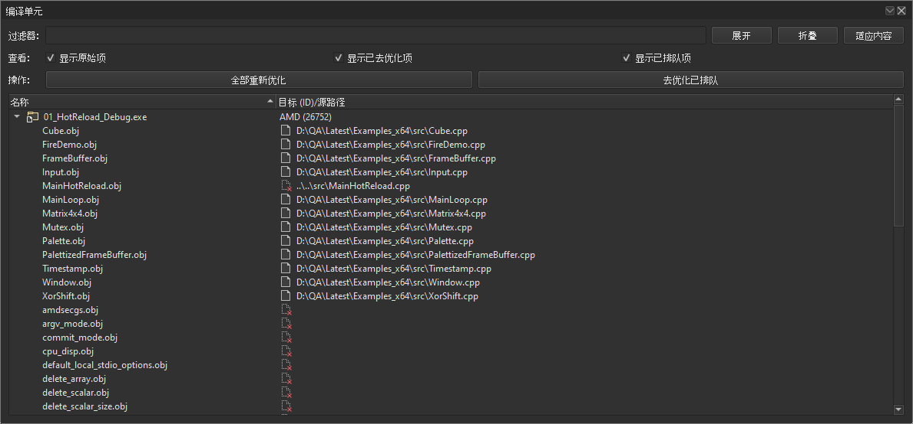
此外，右键单击任何翻译单元或模块并选择显示详细信息...将弹出一个对话框，其中显示为此特定翻译单元或模块存储的所有信息，以及所有已识别的缺陷：
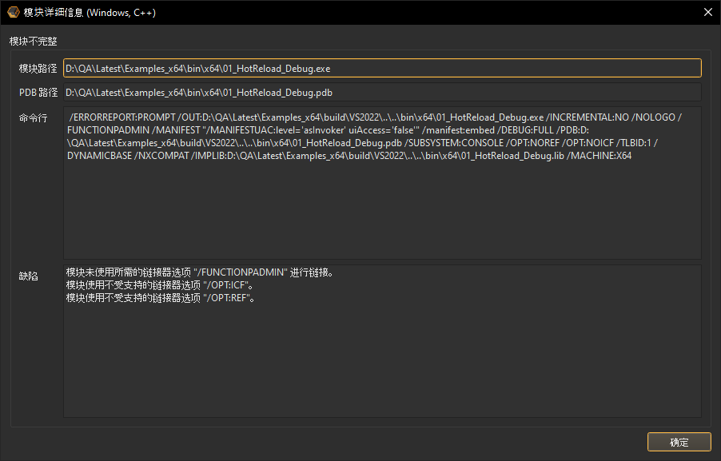
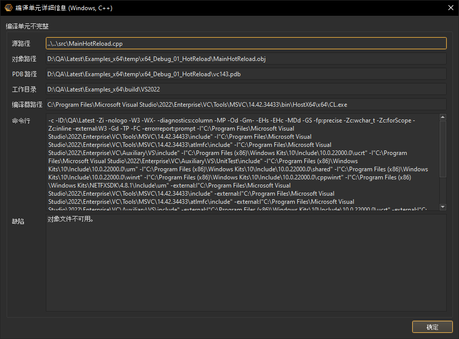
详细编译
在某些情况下，通过 Live++ 重新编译更改可能会失败。这可能是由于缺少项目首选项、奇异的构建设置或 Live++ 中的错误造成的。在调试 -> 切换详细编译下打开详细编译将帮助您诊断此类问题。
启用 "详细编译 "后，Live++ 会在重新编译任何文件时输出以下信息：
- 编译器路径
- 编译器工作目录
- 编译器命令行选项
- 包含的文件
冗长链接
与详细编译类似，调试 -> 切换详细链接下的详细链接将帮助您诊断可能导致 Live++ 无法链接补丁的问题。
启用verbose linking 后，Live++ 将在链接任何补丁时输出以下信息：
- 链接器路径
- 链接器工作目录
- 链接命令行选项
第三方库
json.h
This is free and unencumbered software released into the public domain.
Anyone is free to copy, modify, publish, use, compile, sell, or
distribute this software, either in source code form or as a compiled
binary, for any purpose, commercial or non-commercial, and by any
means.
In jurisdictions that recognize copyright laws, the author or authors
of this software dedicate any and all copyright interest in the
software to the public domain. We make this dedication for the benefit
of the public at large and to the detriment of our heirs and
successors. We intend this dedication to be an overt act of
relinquishment in perpetuity of all present and future rights to this
software under copyright law.
THE SOFTWARE IS PROVIDED "AS IS", WITHOUT WARRANTY OF ANY KIND,
EXPRESS OR IMPLIED, INCLUDING BUT NOT LIMITED TO THE WARRANTIES OF
MERCHANTABILITY, FITNESS FOR A PARTICULAR PURPOSE AND NONINFRINGEMENT.
IN NO EVENT SHALL THE AUTHORS BE LIABLE FOR ANY CLAIM, DAMAGES OR
OTHER LIABILITY, WHETHER IN AN ACTION OF CONTRACT, TORT OR OTHERWISE,
ARISING FROM, OUT OF OR IN CONNECTION WITH THE SOFTWARE OR THE USE OR
OTHER DEALINGS IN THE SOFTWARE.
For more information, please refer to http://unlicense.org/
Intel® X86 Encoder Decoder (Intel® XED)
Copyright (c) 2023 Intel Corporation
Licensed under the Apache License, Version 2.0 (the "License");
you may not use this file except in compliance with the License.
You may obtain a copy of the License at
http://www.apache.org/licenses/LICENSE-2.0
Unless required by applicable law or agreed to in writing, software
distributed under the License is distributed on an "AS IS" BASIS,
WITHOUT WARRANTIES OR CONDITIONS OF ANY KIND, either express or implied.
See the License for the specific language governing permissions and
limitations under the License.
xxHash Library
Copyright (c) 2012-2020 Yann Collet
All rights reserved.
BSD 2-Clause License (https://www.opensource.org/licenses/bsd-license.php)
Redistribution and use in source and binary forms, with or without modification,
are permitted provided that the following conditions are met:
* Redistributions of source code must retain the above copyright notice, this
list of conditions and the following disclaimer.
* Redistributions in binary form must reproduce the above copyright notice, this
list of conditions and the following disclaimer in the documentation and/or
other materials provided with the distribution.
THIS SOFTWARE IS PROVIDED BY THE COPYRIGHT HOLDERS AND CONTRIBUTORS "AS IS" AND
ANY EXPRESS OR IMPLIED WARRANTIES, INCLUDING, BUT NOT LIMITED TO, THE IMPLIED
WARRANTIES OF MERCHANTABILITY AND FITNESS FOR A PARTICULAR PURPOSE ARE
DISCLAIMED. IN NO EVENT SHALL THE COPYRIGHT HOLDER OR CONTRIBUTORS BE LIABLE FOR
ANY DIRECT, INDIRECT, INCIDENTAL, SPECIAL, EXEMPLARY, OR CONSEQUENTIAL DAMAGES
(INCLUDING, BUT NOT LIMITED TO, PROCUREMENT OF SUBSTITUTE GOODS OR SERVICES;
LOSS OF USE, DATA, OR PROFITS; OR BUSINESS INTERRUPTION) HOWEVER CAUSED AND ON
ANY THEORY OF LIABILITY, WHETHER IN CONTRACT, STRICT LIABILITY, OR TORT
(INCLUDING NEGLIGENCE OR OTHERWISE) ARISING IN ANY WAY OUT OF THE USE OF THIS
SOFTWARE, EVEN IF ADVISED OF THE POSSIBILITY OF SUCH DAMAGE.